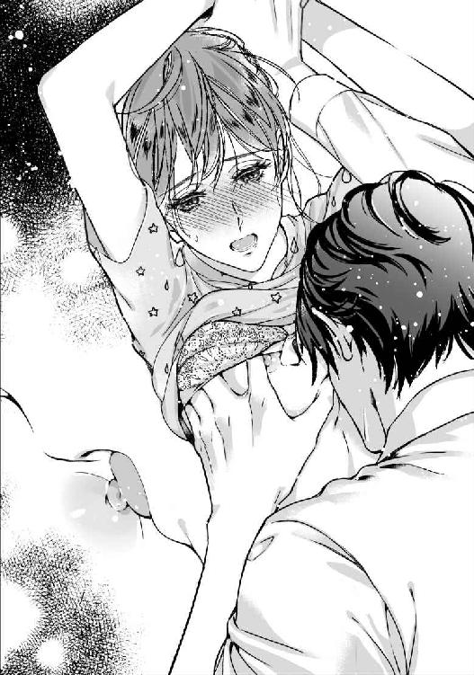
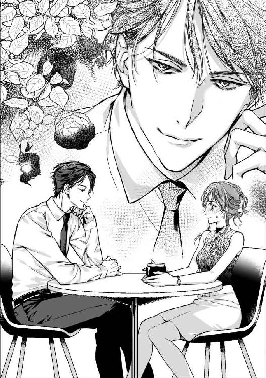
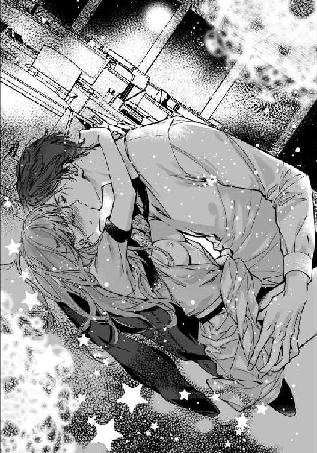

| 堅物社長の甘く淫らなお料理教室 (LUNA文庫) | |
| 田崎 くるみ | |
| 天海社／LUNA文庫 (2018) | |
堅物社長の甘く淫らなお料理教室
著者：田崎くるみ
イラスト：蜂不二子
第一章 『順風満帆？ な人生』
みんな私のことを誤解している。世の中、完璧な人間なんていないのだから。......ただひとり、彼だけを除いて――。
都内のオフィス街にある十階建てのビルの五階に、勤務先である株式会社【カラフル】がある。
企業や学校紹介のパンフレットを手掛けているこのデザイン会社に、大学卒業後から勤めて早四年。私、水澤千尋、二十六歳は今日も背中まである長い髪をクリップでひとつにまとめ、気合いを入れて仕事に取りかかる。
「水澤、これ依頼されていた会社のデザイン案。いつものように文字入れはお前に任せる」
「分かりました」
私にデザイン案を手渡し、さっそうと去っていくのは五十二名の従業員のトップに立つ我が社の社長、瀬戸聖だ。
弱冠二十五歳の若さで起業し、五年経った今業績はアップしており、クライアントからの受注も後を絶たない。
なにより彼のデザインはとても繊細で、見る人の心をつかむ不思議な力がある。私も彼のデザインの虜になったひとりだ。
デザインに興味を持つきっかけになったのが、友人に付き添って訪れたデザインフェスタで目にした、彼の作品だった。
一瞬で目を引きつけられ、あっという間に彼のファンになった私は同じ道に進み、彼が起業したと聞きつけ採用試験を受けた。
瀬戸社長のアシスタント的立場でＤＴＰオペレーターとして働きながら、いつか私もデザイナーとして活躍したいと夢見ている。
その夢のためにも、今できることを精いっぱい頑張るのみ！ その気持ちで日々の業務に当たっていた。
「ねぇ、千尋ちゃん。正直、瀬戸社長と一緒に仕事をしていて、息が詰まる思いをしたことない？」
「え......息が詰まる、ですか？」
この日の昼休み、フロア奥にあるカフェスペースで朝、コンビニで買ってきたサンドイッチを頬張っている私にそう聞いてきたのは、鮎沢春奈先輩。
春奈先輩は私よりひとつ年上で、同じくＤＴＰオペレーターとして働いている。
結婚して二年になる彼女は明るくて姉御肌。そしてなにより話をするのが大好きで、昼休みともなれば彼女の口が休まることはない。
さっきまで、近くにいた同僚と人気の恋愛ドラマについて熱く語っていたかと思えば、急に話を振られキョトンとなる。
すると春奈先輩は本人が近くにいないというのに、なぜか声を潜めて尋ねてきた。
「瀬戸社長ってクライアントに対しては、にこやかに対応しているけど、社員の前では違うじゃない？ 仕事に没頭するばかりであまり笑わないし」
「......はぁ」
瀬戸社長は身長百八十五センチ。百六十五センチと女性としては身長が高い私でも見上げるほど。
おまけにモデルのようにスタイルがいいし、さらには顔もいい。クライアントの女性が「あの切れ長の瞳が素敵！」とか、「厚みのあるセクシーな唇でキスされたい！」なんて言っているのを、度々耳にしたことがある。
才能もあってビジュアルもいいなんて、天は瀬戸社長に二物も三物も与えたと思う。
そんな瀬戸社長だけれど、社内では口数少なく真面目でストイック。私たち社員とは必要以上に話をしない。
だから社内の大半の女性社員は瀬戸社長に憧れてはいるものの、近寄りがたいと感じてもいるようだった。一部の男性社員の間では『カタブツ社長』なんて呼ばれているらしい。
だから、春奈先輩の「彼の下で仕事をしていると、息が詰まらない？」という質問にも納得することはできたけれど、私は今まで一度もそんな風に感じたことなんてなかった。
それは瀬戸社長を上司として尊敬しているし、憧れているからかもしれない。
興味津々で私の答えを待つ春奈先輩に、にっこり微笑んで答えた。
「いつもそばで勉強させていただき、感謝はしていますけど」
期待していた答えとは違ったようで、春奈先輩は面白くなさそうに唇を尖らせた。
「えぇ～じゃあ千尋ちゃんも、憧れているけど近寄れない派？」
「それも違います。純粋に私は上司として瀬戸社長を尊敬しているんです」
きっぱり伝えると、がっくりうなだれ「そっか」と力なく呟いた。
そんな彼女を横目で見ながら、残りのサンドイッチを口に収め、カフェオレを飲み干した。
春奈先輩はおしゃべりが大好きで、ゴシップネタのような他人の恋愛話が大好物。
自分は結婚しているから、他人の恋愛話で潤いを得ているなんて言っているけれど、まだ結婚二年目の新婚さん。それに結婚前から春奈先輩は今と変わらずだった。
でも私は彼女のことを嫌いではない。仕事面ではとても頼りのなる先輩だ。それに明るくて誰にでも分け隔てなく話し掛けてくれる、社内のムードメーカー的存在。
たまに呆れてしまうこともあるけれど、なぜか憎めない存在。それはきっとみんなも同じだと思う。
そんなことを考えながらゴミをコンビニ袋にまとめ、ゴミ箱に捨ててこようと立ち上がるとなぜか感じる視線。
「あの......春奈先輩？」
恐る恐る尋ねると、彼女は顎に手を当てた。
「いやー、いつ見ても千尋ちゃんってスタイルいいなと思って。羨ましいわ、美人でスタイルもよくて、おまけにエリート銀行マンの彼氏がいるなんて」
羨望の眼差しで見つめられると気恥ずかしくなり、無駄に手が前髪に触れてしまう。
「そんなことないですから」
ボソッと否定をすると、春奈先輩はまるでおばちゃんのように、手を上下に振った。
「またまたそんな謙遜しちゃって！ 千尋ちゃんってまさに順風満帆な人生よね。見た目もよくて仕事も完璧！ 素敵な彼氏がいるんです～って自慢しちゃってもいいのに。私だったら自慢しまくっちゃうけどな」
「......自慢なんてできません」
付き合って三ヶ月になる彼......石川賢治のことを言われると、いつも顔が引きつる。
賢治とは高校時代の友人を介して知り合い、何度か会っているうちに意気投合し、いつからかふたりでも会うようになった。
賢治は真面目で仕事にも真摯に向き合っていて、なにより同い年なのに考え方が大人で、笑顔が素敵な人だった。
話し上手で会っても会話は途切れることがなく、なにより賢治といると笑顔でいられ、楽しくて仕方なかった。自然体の自分でいられたから。
そんな彼に私は惹かれ、向こうから告白してくれた時はどんなに嬉しかったことか。
年齢的にも、お互いに結婚を視野に入れて交際をスタートさせたわけだけど......春奈先輩をはじめ、周囲が羨むほど順風満帆な人生を送っているわけではない。
なによりみんな勘違いしている。大好きな仕事だからこそ頑張れているだけで、私は完璧な人間ではないし、女子力も高くない。むしろだらしない方だと思う。
そのせいで今、私は窮地に立たされている。
他の社員と私の話を繰り広げる春奈先輩を尻目に、手にしていた袋をゴミ箱に捨てた。そこでつい溜息を漏らしてしまう。
春奈先輩じゃないけれど、賢治の目にもどうやら私は『完璧な女性』だと映っていたようで......。
付き合いはじめてから分かったことだけれど、賢治は九州男児タイプで、女性は家庭を守るのが仕事！ だと思っているらしく、何度か遠回しに、結婚したら家庭に入って家のことをやってほしいと言われたことがある。
そんな彼にとって私はまさに理想の相手だったようだ。家事が得意そうで、料理も上手そう。それに相手に尽くすタイプだと勘違いしている。
本当の私はひとりの時間も好きだし、家事が苦手で自炊なんてほとんどしない。週に一度ハウスキーパーを雇うことで、どうにかきれいな部屋を維持できている状態。
それなのに賢治に「千尋の手料理を食べたい」と再三言われ、困り果てていた。
いっそのこと、正直に白状しちゃった方がいいのかな。「私は賢治が思っているような家庭的な女性じゃない」、「家事なんてできないし、料理も得意じゃないの」って。
ふと彼に伝えるところを想像してみるものの......だめだ、振られる未来しか思い描けない。
自分を偽ったまま付き合っている現状に疲れる時もあるけれど、やっぱり彼のことが好きだから嫌われたくない。
それに努力すれば、掃除や料理は克服できるかもしれないし！ ......と前向きになっているけど、休日は疲れ果てて練習する気にもなれない。
だから今は理由をつけて逃げているけれど、いつまでも賢治に手料理を振る舞わないわけにはいかないよね。
彼とこの先の未来もずっと一緒にいたいのなら、なおさらだ。
立ち尽くしたままボーっと考え込んでいると、カフェ内にいる社員たちの話題はいつの間にか瀬戸社長のことになっていた。
「瀬戸社長ってクライアントの美人やかわいい人に口説かれても全く落ちないよね。それに浮いた話なんて一度も聞いたことないし、休日でさえも出社して仕事しているみたいだよ」
「すごいよね、瀬戸社長。休みの日まで仕事するとか。それってやっぱり彼女がいないからでしょ」
「彼女がいたら、さすがに休日は一緒に過ごすよね」
みんなの話を聞きながら、元いた席に戻る。
「そりゃそうでしょ。私が瀬戸社長の彼女だったら嫌だなー。休日に会えない彼氏なんて」
「だよねー」
声を上げて笑う社員たちの中でひとり、春奈先輩は神妙な面持ちで私たちを見回した後、ボソッととんでもないことを口にした。
「ねぇねぇ、もしかしたらさ......瀬戸社長は女に興味がないんじゃないの？」
まさかの疑惑に一瞬静寂に包まれるカフェ内。私もあり得ない話に目を瞬かせるものの、ひとりの女性社員は黄色い悲鳴を上げた。
「キャー！ それってもしや瀬戸社長ってば、男しか好きになれないとかですか!?」
さらにギョッとする話に、みんなは異様な盛り上がりを見せた。
「やだ、まさかのＢＬ!?」
「でも瀬戸社長なら、相手によるけど絵になる～！」
「意外とあり得る事実かもよ！ 男にしか興味ないから、どんなに素敵な女性に言い寄られても落ちなかったのかも!!」
春奈先輩の一言からみんな臆測だけで、どんどん話が飛躍していく。春奈先輩に至っては、「そういえば男性のクライアント相手だと、瀬戸社長の対応が少し違うよね！」なんてことを言っている。
同調するみんなに呆れながらも、失礼ながら私もそんな気がしていた。一番近くでずっと仕事をしてきたけれど、まったく女性の影を感じないし、みんなが言うように休日でさえ仕事をしているようだから。
本当に女性より男性に興味があるのかな。
それが真実なら腰を抜かすほどびっくりするけれど、ちょっぴり安心しちゃうかも。
瀬戸社長ってカッコよくてスタイルいいし、三十歳の若さで一企業を運営する成功者なわけだし、なによりデザイナーとして才能がある。
そんな完璧な人でも、ひとつくらい秘密があるのかもしれないと思うと、親近感が沸くというか......。
やっぱり世の中には、完璧な人間なんていないんだ！ ってホッとできるのかも。......なんてことを思うなんて、私ってば卑屈になっていない？
賢治に完璧な女性だと勘違いされていて、会うたびに彼の理想の女性を演じるのに疲れているのかな。......付き合う前はそんなこと、一度もなかったのに。
最近の私は賢治にバレないように、必死に自分を取り繕うことばかり。彼との会話も楽しめない時があるほどだった。
このままじゃ賢治とこれから先も、付き合っていけるわけないよね。......彼と一緒にいたいなら、理想通りの女性にならないと。
瀬戸社長の話で盛り上がるみんなの中で私の頭の中は、賢治と今後どうやって付き合っていけばいいのか、そのことでいっぱいだった。
第二章 カタブツ社長の意外な一面
「うっ......。しょっぱい。塩を入れ過ぎちゃった」
ある日の昼休み。私はひとり、オフィスビルの屋上で、今朝自分で作った見栄えの悪いお弁当を食べていた。
それというのもいよいよ賢治に、『今度のデートで遊園地に行こう。その時、弁当を作ってきてほしい』と頼まれたのだ。
これには言い訳の言葉が浮かばず、作ってくると約束した。すぐに料理の練習に励み、今日からお弁当も作ってみたけれど、散々なでき栄えに嫌気が差していた。
「どうして卵焼きひとつ、上手に作ることができないのかな......」
少し焦げた卵焼きを箸でつかみ、ジッと眺め泣きべそをかいてしまう。
さすがにこのお弁当をみんなの前で広げる勇気はなく、ひとり寂しくお弁当を食べていた。
しょっぱい卵焼きを口に入れてモグモグしていると、心地よい風が髪を揺らした。
複数の企業が入っているオフィスビルの屋上は、誰でも気軽に立ち入ることができる整備された場所。
都会の屋上とは思えないほど緑で溢れた、解放的な屋上庭園になっている。昼休みのこの時間は、複数あるベンチが埋まるほどたくさんの人が利用していた。
入社して四年になるけれど、私も含めた社員のほとんどが、いつもオフィスのカフェで昼食を取っているから、こうやって昼休みに屋上へ来るのは初めてだった。
「風が気持ちいいな......」
出勤したら外出がない限り、ずっとオフィスにこもりっぱなしだから、こうして昼休みに外の空気を吸うって、すごくリフレッシュになるかも。......これでお弁当がおいしかったら、言うことないのにな。
見た目もマズそうなお弁当箱の中を眺めていると、人影に覆われた。とっさに顔を上げると、私の前に立ちはだかっていたのは瀬戸社長で目を剥く。
「え......瀬戸、社長？」
途切れ途切れに彼の名前を呼ぶと、瀬戸社長は顔をしかめた。
「珍しいな、水澤が屋上に来るなんて」
「あ......今日初めて来まして......」
「そうか。......悪いが隣いいか？ どこもいっぱいで」
瀬戸社長の話を聞き周囲を見回すと、彼の言う通りベンチは全て埋まっている。一緒に食べるなんて、ちょっぴり緊張してしまうけれど、断る理由などない。
「はい、どうぞ」
少し端に寄り彼のためにスペースを空けた。
「悪いな」
そう言いながら瀬戸社長は、私の隣に腰掛けると、手にしていたランチバッグから、お弁当箱を取り出した。
え......瀬戸社長がお弁当!?
そういえば瀬戸社長、昼休みになるといつもひとり、オフィスから出ていっていた。外に食べに行っているのかなって思っていたけれど、もしかして毎日屋上に来ていたの？
それにしてもみんな、瀬戸社長は女に興味がないみたいに面白おかしく言っていたけれど......。
手を合わせ「いただきます」と呟き、見た目もきれいでおいしそうなお弁当を食べていく瀬戸社長。
これは間違いなく彼女の愛妻弁当でしょ。仕事ばかりで女に興味なさそうに見えたのに、しっかりお弁当を作ってくれるような彼女がいたんだ。
まさかの事実に驚くも、次に気になるのは彼の彼女について。
だって瀬戸社長だよ？ 社員の前では常に硬い表情で正直私、彼の笑った顔を見た記憶がない。
ストイックで仕事のことしか頭になさそうな彼の彼女って、一体どんな人なんだろう。嫌にならないのかな。休日まで出勤する彼氏だなんて。
それなのにおいしそうな愛妻弁当を作るなんて......。完璧な瀬戸社長だから、きっと彼女も完璧な女性なのかも。
「まさか瀬戸社長がここで愛妻弁当を食べているとは、夢にも思いませんでした」
思わず漏れたた声。するとなぜか彼は箸を休め、目を丸くさせて私を凝視してきた。
「え、どうかされましたか？」
私、別になにも変なことを言っていないよね？ なのに瀬戸社長ってば、どうしちゃったんだろう。
目を瞬かせ、私もまた彼を凝視すると淡々と述べた。
「なにが愛妻弁当だ。これは自分で作った弁当だ」
「自分でって......瀬戸社長がこのお弁当を!?」
ギョッとし、身を乗り出してお弁当箱の中身と瀬戸社長を交互に見てしまう。
おかずは色合いもよく、バランスのとれたもので見るからにおいしそう。これを瀬戸社長が作ったって本当なの？
信じられなくて目を白黒させる私に、彼は若干引き気味。
「だからそうだと言っているだろ？」
相変わらず硬い表情で言いながら、黙々と食べ進めていく彼に私はあっけにとられる。
だって瀬戸社長のお弁当は、まさに私が作りたい理想のお弁当そのものだから。
色合いも栄養面でもバランスが取れていて、詰め方も秀逸。見ているだけで食欲をそそられる。
こんなお弁当を作れるようになったら、賢治も大喜びだよね。今すぐにでも結婚したいと思ってくれそう。
そうなると気になるのは味の方。見た目はものすごくおいしそうだけど、肝心の味はどうだろう。
一度気になると気になって仕方なく、瀬戸社長に懇願した。
「瀬戸社長、味見させてください」
「は？ なにを急に......」
キョトンとする瀬戸社長には申し訳ないけれど、好奇心が勝り「失礼します」と一言断りを入れ、彼のお弁当箱から卵焼きをひとつ手に取り口に運んだ。
「お前、なに勝手に......！」
珍しく声を荒らげる瀬戸社長だけれど、そんな彼の声など私の耳には入ってこなかった。
だって彼が作った卵焼きは、びっくりするほどおいしかったから。
「おいしい......。なんですかこの卵焼きは!! 料亭で出せるくらいおいしいレベルなんですけど!!」
「そ、そうか......」
興奮しながら話す私に、瀬戸社長はたじろいでいる。
ふわっふわでほのかな甘みと、出汁が効いているのかな？ 優しい味つけで何個も食べられちゃいそう。こんなにおいしい卵焼きを食べたのは初めてだ。
「信じられないくらいおいしい。......どうやったらこんな風においしく作れるんですか？」
何度も卵焼きを練習してきたけれど、一向においしく作れない。どうして私、卵焼きひとつまともに作れないのかな。
それに比べて瀬戸社長ってばなに？ 料理までできちゃうなんて、どこまで完璧な人なの？
彼のパーフェクトぶりに、次第に自分が情けなく思えて涙腺が緩む。
どうして私って女子力低いんだろう。家事全般ができないなんて......。
考えれば考えるほど自己嫌悪に陥り、ズズッと鼻を啜ると瀬戸社長は眉を寄せた。
「なぜ泣く？」
突然泣き出した私に、彼もどうしたらいいのか分からない様子。
悪いけど涙が溢れるのは、瀬戸社長のせいだ。
「瀬戸社長の卵焼きがおいしすぎるからです。ズルイですよ、男のくせにこんなにおいしく作れちゃうなんて。......私なんて女なのにまともに作れないんですよ？」
泣きながらも彼のお弁当箱に手を伸ばし、もうひとつ卵焼きを頬張る。すぐに瀬戸社長に「おい」と突っ込まれるものの、もぐもぐと食べるとやっぱりおいしくて余計に泣けてくる。
「これ、食べてみてください」
恥ずかしくて誰にも見られたくないから、今日はわざわざ昼休みに屋上まで足を運んだ。そのお弁当の中を彼に見せると、顔をしかめた。
「これは......お前が作ったのか？」
お弁当箱の中を見た後、チラッと私の様子をうかがった瀬戸社長にコクリとうなずいた。
「はい。必死に料理の勉強をしているのですが、一向に上達しなくて。とにかく食べてみてください」
強引に勧めると彼は戸惑いながらも観念し、少し焦げている卵焼きを恐る恐る手に取り口に運んだ。しかし食べるとすぐに渋い顔をし、口元を手で覆った。
その姿に「やっぱり」とがっかりしてしまう。
「ちょっとしょっぱいですよね......」
おずおずと言うと、彼はお茶を一気に飲み干した後、鋭いまなざしを向けた。
「水澤お前、これ......！ ちょっとどころじゃないだろう！ 塩の入れ過ぎだ！」
「いや、しょっぱい方がおかず感が増すと思いまして......」
苦笑いしながら言い訳すると、瀬戸社長は額に手を当てた。
「仕事のセンスはあると思うが、料理のセンスはない。人には向き不向きがあるんだ、きっぱり諦めろ」
容赦なく言う瀬戸社長にムッとなる。そう言われて「分かりました」なんて到底言えないから。
「そういうわけにはいきません！ 私が結婚できるかどうかがかかっているんですから！」
「だったら料理ができる旦那を見つけろ」
反論に出たもののすぐに返され、何事もなかったように食べ進める瀬戸社長にしゅんとなる。
そしてなにも言い返せなくなる。だって瀬戸社長の言う通りだと思うから。
人には向き不向きがあるということを、長年努力しても一向に料理の腕が上がらなかった自分が一番よく理解している。
料理の才能はなく、家事もできないことを賢治に正直に話して、それでも振られたらそれこそ家事が得意で、料理上手な旦那さんを見つけるべきなのかも。
いつかは絶対賢治にバレるよね。......私は彼が思っているような女子力が高い女じゃないってことが。
私も瀬戸社長のように、おいしい料理が作れたらいいのにな。そうしたら家事ができなくても、賢治の胃袋をがっちりつかむことはできる。
そこまで思いを巡らせてハッとなる。
そうだ、瀬戸社長みたいな料理を作ることができたら......！
隣で食べ進める瀬戸社長に、私は思い切ってお願いをした。「私に料理を教えてくれませんか!?」と。
第三章 男の色気に魅了されて
次の日のオフィス。瀬戸社長に頼まれた仕事に取りかかっていると、彼が書類を手に私のデスクに近づいてきた。
「水澤、来週クライアントと打ち合わせが入ったから、それまでに企画案のまとめを頼む」
「分かりました」
彼から書類を受け取ったものの、なぜか自分のデスクへ戻ろうとしない瀬戸社長。
「他になにか？」
不思議に思い尋ねると、彼は忙しなく働く周囲の社員を見回した後、神妙な面持ちでコソッと耳打ちしてきた。
「昨日の件は本気か？」
瀬戸社長が言う昨日の件とは、料理を教えてほしいとお願いしたことだよね？
すぐに「もちろんです！」と答えると、彼は面食らった。
昨日、私が無茶なお願いをすると、瀬戸社長は瞬きすることなくジッと私を眺め、「冗談だろ？」と呟いた。その後、本気で教えてほしいことを伝えたものの、途中で昼休みが終わる時間が近づき、話は終了。彼から了承をもらうことなく急いでお弁当を食べ終え、オフィスへと戻った。
それから今日までなにかと忙しく、改めて瀬戸社長にお願いする時間を持てずにいたからか、彼は冗談だと思っていたようだ。
「ご予定がなければ、ぜひ今夜からでも指導していただきたいです！」
「指導ってお前......どこでやるつもりだ？ うちのオフィスにはキッチンは併設されていないぞ？」
彼は私のデスクに手をつき、呆れた表情を覗かせた。
「場所でしたら問題ありません！ うちでお願いします!!」
むしろその方が助かる。自分が使い慣れたキッチンで教えてもらえた方がいいし。
なのに瀬戸社長は目を皿のように丸くさせた後、諦めにも似た溜息を漏らした。
「分かった、今夜は予定ないから仕事が終わり次第お前の家に行く。住所は社員名簿に登録しているところで合っているか？」
「ありがとうございます！ はい、合っています!!」
早速今日から教えてもらえると思うと嬉しくて、自然と声も弾む。
「じゃあ今夜」
ボソッと言うと、彼は自分のデスクへ戻っていった。
凛々しい後ろ姿を見つめながら、デスクの下で拳をギュッと握りしめた。
よかった、瀬戸社長に料理を教えてもらえることになって。きっと彼なら教え方も上手で、私の料理の腕はメキメキ上達しちゃうかもしれない。
今度こそ苦手な料理を克服できるかと思うと嬉しくて、仕事中だというのに頬は緩むばかりだった。
急いで仕事をしたおかげで定時に上がることができ、残っている同僚や瀬戸社長に挨拶をしてオフィスを後にし、向かった先は近所のスーパー。
まずは卵焼きから教えてもらって、お弁当のおかずになる料理を作れるようになりたいな。
次々と食材をかごに入れ会計を済ませ帰宅。楽なシャツとハーフパンツの部屋着に着替え、キッチン周りを整理整頓しているとインターホンが鳴った。
「あ、瀬戸社長だ」
「はーい」と返事をしながら確認もせずドアを開けると、その先にいた彼は驚いていた。
「すみません、勢いよくドアを開けてしまって。どうぞお入りください」
謝りながらも部屋に招き入れる。スリッパを出すと、彼は無言で革靴を脱ぎスリッパを履いたものの、そこから一歩も動こうとしない。
「......瀬戸社長？」
呼ぶとゆっくりと顔を上げ、彼は私の頭のてっぺんから足元へと視線を移していく。
その瞳からは鬼気迫るものが感じられ、息を呑む。
「あの......？」
声を絞り出すと、いきなり彼に腕をつかまれた。
「キャッ......」
思わず声を上げた私に、彼は切羽詰まった表情を見せた。
「お前、男を家に上げることがどういう意味なのか......ちゃんと理解しているのか？」
「......えっ」
苦し気に発せられた彼の言葉。
「簡単に人を家に上げやがって。......俺はお前の上司である前に、ひとりの男なんだぞ？」
厳しい表情なのはいつもと変わらないのに、どこか様子が違う瀬戸社長に戸惑いを隠せない。
胸は早鐘を打ち続けていて、息苦しい。だってこんな瀬戸社長を私は知らないから。
「え......だって瀬戸社長ですよ？」
そうだよ、私の腕をつかんでいるのは、四年間ずっと近くで仕事をしてきた瀬戸社長だ。
女性には興味がなさそうで、仕事一筋。どんなに素敵な相手に言い寄られたって、華麗にかわして相手にしたことなんて一度もなかった。
なにより四年もの間、彼に一度も女性として見られたことなどなかった。
ただの部下でしかないはず......でしょ？ だから家にも上げたし、こんなラフな格好で出迎えたりもした。
けれど目の前にいる瀬戸社長は？ いつもの彼とは違い、変な焦りを覚える。
「そ、それより料理！ 早く教えてください」
もしかしたら、からかわれているのかもしれない。私の反応を見て楽しんでいるのかも。
明るく振る舞い、やんわりとつかまれたままの腕を解こうとしたものの、更に強い力でつかまれた。
その瞬間、ドキッと胸が鳴る。すぐに彼を見れば、真剣な瞳が向けられていた。
静かな室内に心臓の鼓動が響いているんじゃないかと思うほど、ドキドキしている。このままなにも話さないでいたら、忙しなく動く心臓の音に気づかれてしまいそう。
なにか言わなくちゃって分かっているのに、言葉が出てこない。
瀬戸社長のことはカッコイイと思う。けれどそれよりも私にとって彼は、憧れの存在で尊敬できる上司だった。
だから家でふたりきりになっても、なにも起こるはずないと高をくくっていたのに――。
今の状態はなに？ 彼に腕をつかまれ、私は激しくドキドキさせられている。
どれくらいの時間、彼に腕をつかまれたまま切れ長の瞳に射抜かれていただろうか。彼は苦し気に表情を歪め、擦れた声で囁いた。
「料理の前にお前には、他に教えなくてはいけないことがある」
「――え、キャッ!?」
勢いよくつかまれていた腕を引かれると、彼は軽々と私の身体を抱き上げた。いきなり宙に浮いた身体に悲鳴にも似た声を上げ、とっさに彼の首元に腕を回してしまう。
お姫様抱っこのまま彼はズンズンと足を進め、リビングへ向かうと私はソファに下ろされた。
すぐにギシッと音を立てて、彼が覆い被さってくると、私の心臓は壊れてしまいそうなほど忙しなく動き出す。
「瀬戸......社長......？」
彼越しに部屋の明かりが見えて眩しくて、目を細める。
それでも私の瞳には近距離に彼の顔が映っていて、頭の中が混乱する。
どうして私、こんなことになっているの？ 瀬戸社長に押し倒された状態でいるの？
その間も彼は私の上で乱暴にジャケットを脱ぎ、ネクタイを緩めていく。動作ひとつひとつから男の色気を感じ、視線がそらせなくなる。
再びギシッと軋むソファ。彼は妖艶な瞳を向けて顔を近づけてきた。
そして大きな手で私の頬を包むとゆっくりと指を下げて、下唇に触れた。親指で強く下唇を撫でながら彼は言った。
「無防備に男を家に入れるってことは、こういうことをされても文句言えないぞ」
「え......あっ......んっ」
次の瞬間、彼は私の首元に顔を埋め、熱い舌が這っていき思わず甘い声を漏らしてしまう。
やだ、私ってばなんて声を出しているのよ。
カッと身体中が熱くなり、羞恥心に襲われるも、彼の舌は私の首元を下っていく。その瞬間、身体がゾクリと震えた。
「やっ......！ 瀬戸社長っ......！」
甘い刺激に怖くなり彼の身体を押し返すものの、ビクリともしない。
どうして彼は急にこんなことを？ たしかに私が悪い。相手が瀬戸社長といえど、安易に部屋に上げてしまったのだから。
でもまさかこんな展開になるなんて、全く予想していなかった。だって相手が瀬戸社長だったから。
抵抗するものの、私の力では彼に敵わず、なすすべなく彼の手は服の上から私の胸を弄る。
身体中をやわやわと触られ、少しずつ息が上がり吐息が漏れる。
私には賢治という彼氏がいるんだから、抵抗しないとって頭では分かっているのに身体は抗えない。
服の上から触られているだけなのに、どうしてこんなに感じちゃっているんだろう。
与えられる刺激に必死に声を我慢するだけで精いっぱいで、次第に抵抗する力を失っていく。
けれど瀬戸社長の手が服の中に侵入し、肌に直に触れた彼の冷たい手の感触に「ヒャッ」と変な声が漏れた。
それでも彼の手は止まることなく、ブラジャーごと服を捲り上げられ、露わになる胸。とっさに隠そうとしたものの、すぐに両手をつかまれ頭上でひとつにまとめられてしまった。
「いやっ......見ないでください」
隠したいのに隠せないもどかしさと、感じる視線に泣きそうになる。
露わになった肌が空気に触れる中、彼はそっと私の胸に顔を埋めた。
「んっ......あっ......やぁっ」
左胸を手で揉み解されながら、右胸の頂を口に含み、舌先で乳首を転がされた瞬間、お尻から背中にかけて電流が走ったように、身体がのけ反る。
あれほど必死に我慢していた声は、絶え間なく漏れていく。
その後もエスカレートしていく行為。胸の尖りをコロコロと転がされ、ぐるりと周囲を舐められていく。

もうどうしたらいいのか分からなくて、固く目を閉じた。
すると余計に与えられる刺激を敏感に感じて、顔から火が出てしまいそうなほど恥ずかしくなる。
どうしよう、どうしたらいい？ 私の力じゃ彼から逃れることはできそうにない。でもずっとされるがままでいいわけがない。
頭に浮かぶのは賢治の姿。
そもそもこういうことは、好きな人以外としてはいけないことじゃない。それなのにどうして私、こんなに感じちゃっているんだろう。
瀬戸社長は憧れの人であり、上司として尊敬できるから？ 人として嫌いじゃないから？ ......それとも私、みんなと同じように自分でも気づかないうちに彼に対して、特別な感情を抱いていたの？
グルグルと想いが巡るも、次第に思考回路が断たれていく。
もういっそのこと、このまま流れに身を任せてしまおうか。......そんなことさえ考えてしまった時、彼の手がショートパンツの中に侵入してきた瞬間、ハッと我に返る。
このまま流れに身を流されるわけにはいかない！ だって私は賢治が好きだし、これから先も私にとって瀬戸社長は、憧れの存在でいてほしいから。
私が男性である彼を安易に家に上げたことに対して怒っているんだよね？ だったらもう素直に謝るのみ!!
無我夢中で叫ぶように言った。
「ごめんなさいっ！ 私が悪かったです!! もう簡単に男性を家に上げたりしません！」
宣言するように言うと彼はピタリと動きを止め、頭上でつかまれていた手は解放されて素早く私から離れた。
「......えっ？」
服が乱れたまま起き上がり、ぼうぜんと見つめる先の彼は緩んだネクタイを締めていた。
そしていつものように硬い表情で私を見据えた。
「分かればいい。......今後、俺以外の男を簡単に家に上げるな」
意味深なセリフにドキッとしてしまう。だってなんか......まるで恋人に言われるようなセリフだから。
「は......い」
どうにか返事をすると、瀬戸社長は床に落ちたジャケットを手に取った。
「理解できたなら早く服を直せ。......料理、教えてほしいんだろ？」
「服......あっ！」
ハッとし慌てて服装を直すものの、彼に見られたことは揺るがない事実。
見られちゃったんだよね、瀬戸社長にむっ、胸を......！
けれど彼は何事もなかったようにキッチンへ向かう。
そういえばさっき、料理を教えてくれるようなことを言っていたよね？ あんなことがあった後なのに、本気で教えてくれるつもりなの？
おずおずと立ち上がり、後を追ってキッチンへ向かい、調理器具などを見ている彼に恐る恐る問いかけた。
「あの、本当に料理を教えてくださるんですか？」
今まで彼は私にとって、ただの上司だった。でもさっきのことがあった手前、嫌でもひとりの男性なんだと認識し、警戒してしまう。
そんな私に瀬戸社長は真意の読めない顔で淡々と言った。
「不本意だが約束したからな。......それにお前、本気で料理の腕を上げたいみたいだし。そういう奴は、放っておけない」
硬い表情が少しだけ崩れ、頬を緩めた優しい顔に胸が鳴る。
うわぁ......なにその笑顔。四年もずっと近くで仕事をしてきたけれど、そんな笑顔を一度も向けられたことなかったのに。
このタイミングで見せられちゃったら、嫌でも胸がキュンとしちゃうじゃない。普段滅多に笑わない人の笑顔は、破壊力抜群で困る。
戸惑い、忙しなく視線を泳がせていると、瀬戸社長はワイシャツの袖のボタンを外した。
「今日は水澤の家で教えるが、今後は俺の家に来い」
「え、瀬戸社長の家にですか？」
驚く私を尻目に、袖を捲り終えると彼は再びキッチンを見回した。
「あぁ、調理器具も調味料もこれだけでは、教えたくても教えられない」
な、なるほど......。普段まったく料理をしないから、我が家のキッチンには必要最低限の調理器具しか置いていない。調味料も砂糖や醤油のみだし。
納得するも私は瀬戸社長のことが、分からなくなるばかりだった。
不用心に男性を家に上げただけで、どうしてあんなことをしたの？ 子供じゃないんだもの、口で言ってくれれば理解できるのに。
それに『今後、俺以外の男を簡単に家に上げるな』。この言葉の意味はなに？ どういう思いで言ったの？
な、なにより彼に身体を弄ばれ、賢治とする時以上に感じていた自分が恥ずかしい。
いや、でもなんていうか......その、瀬戸社長があまりに上手というか......。すごく慣れている感じだった。女性に興味がなかったんじゃないの？ 見た目とは裏腹に、実はとんだ遊び人だとか？
瀬戸社長のことを考えれば考えるほど、彼に対して疑問が増していく。
その後、またさっきみたいなことをされるんじゃないかと、警戒しながらもはじまった彼の料理教室。けれど襲ってくる気配はなく仕事を教えるように彼は丁寧に料理を教えてくれて、私は拍子抜けしてしまった。
第四章 思いもよらぬ告白
「違う、さつまいもは斜め切りにするんだ。......それと油の温度はどうだ？ ちゃんと測ったか？」
「斜め切り......あ、油の温度ですか？ 勘じゃだめなんですか？」
「当たり前だ。温度はしっかり測れ」
なにかひとつやるたびに、厳しい指導が入る。言われるがまま手を動かすことで精いっぱいだった。
瀬戸社長に初めて料理を教わってから早一ヵ月。彼は嫌な顔ひとつ見せず、週に二、三度は私に料理を教えてくれていた。
お弁当の定番おかずを中心に、毎回数品指導してもらっている。今日はさつまいものバター焼きと、鶏モモ肉の塩焼き、もやしとピーマンのカレーナムル、レンコンの甘辛炒めと、バラエティーに富んでいる。自分ひとりでは到底思いつかないメニューの数々に目から鱗。
そして大好きな瀬戸社長お手製の卵焼き。これだけはどうしても完璧にマスターしたくて、毎回教えてもらっていた。
二回目以降は瀬戸社長が住むマンションで教えてもらっていた。
高層マンションの最上階にある彼の部屋は、黒で統一されたシンプルな部屋だった。キッチンにはたくさんの調理器具と、見たことのない調味料の数々が所狭しと並べられていて、最初見た時は目が釘づけになったほど。
しばらくの間、社内でもふたりきりになるとつい警戒していたものの、あの日以降、彼が私に手を出すことは一度もなかった。
彼の住むマンションでふたりきりになっても、まるで職場にいるかのようなやり取りばかり。
作り終えた後は夕食を共にしているものの、そこでの会話は専ら仕事のこと。だけど私の中で瀬戸社長に対する想いは日に日に変化していった。
自分でも嫌になるほど料理オンチで、私が瀬戸社長の立場だったらイライラしてキレそうなのに、彼は根気強く教えてくれている。
それも分かりやすく、基本的なことから丁寧に説明してくれていた。厳しくもあるけれど、オフィスではいつも硬い表情なのに、時折笑顔を見せられてドキッとさせられることもしばしば。
それにエプロンをつけて料理をする彼の姿は、普段より二倍増しでカッコよく見えた。
きっとこの姿を見たら、ますます瀬戸社長のファンは増えちゃうんじゃないかな。
でも彼が料理上手なことも、エプロン姿がたまらなくカッコイイことも、笑顔を見たことがあるのも、全部自分だけだと思うと胸の奥がくすぐったくて、キュンと鳴る。会社の社長として働く彼とのギャップに魅了されていた。
その度に自分の気持ちの変化に戸惑いを隠せなくなるけれど、すぐに賢治の存在を思い出し、必死に瀬戸社長に対する気持ちをかき消していた。
「え......来週の土曜日？」
『あぁ、どうかな？ ずっと行けずにいた遊園地に行かないか？』
数日後。帰宅後ゆっくりしていると賢治から電話がかかってきた。ちょうど忙しい時期で、ここ一ヵ月会っていなかった。
やっと仕事も落ち着き、休みも取れるようになったようだ。
『約束覚えている？ 俺、ずっと千尋の手料理を食べるのを楽しみに仕事を頑張っていたんだ』
「賢治......」
そんなことを言われて、嬉しくないわけがない。瀬戸社長に料理を教わっていて本当によかった。
まだ瀬戸社長のように見た目も完璧に作れないけれど、味だけはおいしく作れるようになったから。
今の私ならきっと賢治に幻滅されることない物を作れると思う。
『なぁ、お弁当のおかず、リクエストしてもいい？ 甘い卵焼きとから揚げが食いたい』
子供みたいなリクエストにクスリと笑みが零れる。
「了解。じゃあ卵焼きとから揚げは絶対に入れるね」
『やった！ 楽しみにしている』
「......うん」
今までずっと賢治と会うたびに気を張っていたからかな。彼の望む料理に自信が持てて、付き合う前のように自然体で話せている。
電話を切った後、飾られている彼との写真を眺めながら瀬戸社長に感謝するばかり。
彼が料理を教えてくれなかったら、賢治とだめになっていたかもしれないから。
土曜日に手料理を振る舞って、賢治がおいしいって食べてくれたらいいな。......でもそうなれば、もう瀬戸社長に料理を教わる必要はなくなるよね。
基本的なことは教えてもらえたし、あとは自分ひとりでも練習できるもの。
なのにもう瀬戸社長と会社以外で会って、料理を教わることができなくなるのかと思うと、寂しく思う自分もいて驚きを隠せなくなる。
「え、どうして？ もう瀬戸社長にはじゅうぶんすぎるほど教えてもらったじゃない」
それに彼にとっては、迷惑以外なにものでもないよね。ただでなくとも仕事が忙しくて、休日にまで出勤しているのに、早めに仕事を切り上げてこの一ヵ月間、ずっと教えてくれていたのだから。
なによりこれ以上彼と共に過ごしたら、自分の気持ちがもっと変化しそうで怖い。新たな一面を知るたびに、心を大きく揺るがされているから。
来週の木曜日に、また瀬戸社長に料理を教えてもらう予定になっている。その日を最後にしよう。もうひとりでも大丈夫だから。
そう心に決め、明日の勤務に備えて早めに就寝した。
そして迎えた次の週の木曜日。料理を教わる日は別々に退社し、彼の住むマンションの近くにある大型スーパーで待ち合わせをしていた。
作るメニューを考えて食材を購入し、マンションへと向かう。
この日作ったのはナスの照り焼き、鶏肉のいんげん巻き、ミルフィールカツ、ミニトマトのプチカプレーゼ。お弁当に入っていると見栄えも良い料理ばかり。もちろんおいしくて、箸が止まらなくなる。
毎回教えてもらっている卵焼きも、少しずつだけれど彼と同じ味に近づいている。
いつものように仕事の話をしながら食べ進めていると、なぜか急に瀬戸社長はジッと私を見つめてきた。
「......あの？」
食べているところを見られているかと思うと、気恥ずかしくなり食べづらくなる。
箸と茶碗を手にしたまま尋ねると、彼は珍しく「フッ」と笑みを零した。
「悪い。......いつもだけど、本当に水澤はおいそうに食べるなと思って」
「特に卵焼きを食べている時が一番」と付け足して、口元に手を当てて声を押し殺して笑う姿に、カッと顔が熱くなる。
「なっ......！ だって仕方ないじゃないですか。瀬戸社長の作るご飯がおいしすぎるのがいけないんです!!」
開き直ってパクパク口に運んでいく。
それにしても私、笑われるほどおいしそうに食べていたのかな。いや、実際に彼の作るご飯がおいしいからだけど。笑われると恥ずかしくなる。
羞恥心をかき消すようにおかずに箸を伸ばし、モグモグと食べていく。すると、急に瀬戸社長は「あ」と声を上げると、私に向かって腕を伸ばした。
「――え」
伸びてきた手は迷うことなく私の口元に触れ、彼の長い指が唇下を拭う。
突然のことにピタリと動きを止め、彼の指を目で追っていくと、私の口についていたご飯粒をそのまま口に含んだ。
「口についていることにも気づかなかったのか？ 誰もお前の分を食べたりしないから、ゆっくり食え」
呆れたように言われたものの、私の頭の中はパニック状態。
「えっ......えっ!?」
い、今っ......！ 瀬戸社長ってば、私の口についていたご飯粒を食べたよね!?
まるで恋人同士がやるような行為に、身体中の熱が上昇していく。
それなのに瀬戸社長は、顔色ひとつ変えず黙々と食べ進めている。
もしかしたら瀬戸社長にとって私は、手のかかる部下......いや、子供みたいな存在なのかな。
だから料理を教えてくれたり、さっきみたいに恥ずかしいことも平気でしちゃうのかもしれない。
そう思うと次第に身体の熱も引いていく。
そうだよね、瀬戸社長みたいな大人で完璧な男性が、私なんかを相手にするわけないし、女性として見てくれるわけない。それこそ子供か、部下止まりなはず。
だからきっと、こうして週に二、三度家に招いてくれて、料理を教えてくれているんだ。
妙に納得しながら、ふと目の前で食事している瀬戸社長に視線を向ける。
よく考えたらあり得ないことだよね。こうして彼の住むマンションで一緒に食事をしているなんて。
それも今日で最後かと思うと、やっぱり寂しく思う。彼と過ごす時間は心地よくて、新たな発見があったりして楽しかったから。
食べ終えた後、ふたりで手を合わせ「ごちそうさまでした」をした後、お茶を飲みながら彼に感謝の気持ちを伝えた。
「あの、瀬戸社長......この一ヵ月間、私に料理を教えてくださり本当にありがとうございました」
深々と頭を下げて顔を上げると、彼は目を丸くさせていた。
「なんだ、急に。俺はまだまだお前に教え足りないが。今のまま手離すつもりはないぞ」
手離すつもりはない......だなんてセリフにドキッとしながらも、すぐに深い意味はないと気持ちを切り替える。
「ありがとうございます。......でも、もう本当に大丈夫です。瀬戸社長にはじゅうぶんすぎるほどご指導いただきましたので」
明るく笑顔で言うものの、彼は眉間に皺を寄せた。
「じゅうぶんとは程遠いだろう。基本的なことしか教えていないのだから」
「基本的なことを教えていただいたからこそ、今後は自分で練習するべきだと思うんです。そうでなきゃいつまで経っても、うまく作れない気がしますし」
それともうひとつ。こうして彼と過ごす時間が増えれば増えるほど、賢治に対する罪悪感が増してしまうから。
「実は明後日、彼にデートに誘われていて、お弁当を持っていく予定なんです。今の私の料理の実力なら、おいしいと言ってもらえると思います。......本当、瀬戸社長には感謝してもしきれません」
これからも努力を続ければ、もっとうまくなれる気がするから。
「ありがとうございました」
再び感謝の言葉を伝えると、瀬戸社長は真っ直ぐ私を見つめたまま尋ねてきた。
「なぁ......水澤が苦手な料理をここまで頑張るほど好きな相手って、どんなやつなの？」
「え？」
まさか彼に賢治のことを聞かれるとは夢にも思わず、目を剥いてしまう。
四年間、ずっと一緒に仕事をしてきたのに、一度もプライベートなことを聞かれたことなんてなかったから。
もちろん私に対してだけではない。他の社員に対しても同じだった。仕事のこと以外で話すことなんてなかったもの。
驚きを隠せずにいると、彼は怪訝そうな顔を見せた。
「もしかして、言えないような相手なのか？」
「そ、そうじゃありません。ただその......瀬戸社長が私にプライベートなことを聞いてきたことに驚いたんです」
しどろもどろになりながらも説明すると、彼は気まずそうに視線を泳がせた。
「料理を教えているんだ、聞いてもおかしくはないだろう？」
「それはそうですけど......」
この一ヵ月の間にだって、賢治のことを聞かれたことなんてなかったのに、どうして急に？
不思議に思いジッと彼を見つめていると、照れ臭くなったのか、次第に頬や耳まで赤く染める姿に目を見開いた。
嘘......もしかして瀬戸社長、照れているの？ どうして照れているのか疑問に思いながらも、クライアントの前では笑顔で対応しているけれど、私たち社員の前では常に硬い表情の彼が照れている姿に、胸がくすぐったくなる。
こうしてまた瀬戸社長は私に意外な一面を見せて、胸をときめかす。
そしてぶっきらぼうに「聞かせろよ」と促す彼に自然と頬を緩ませながら、賢治のことを話していった。
「彼とは友人を介して知り合ったんです。同い年ということもあって、気兼ねなく話せて、一緒にいると楽しくて。紳士で優しくて、仕事に一生懸命で。私には勿体ない人なんです」
賢治の自慢話にもかかわらず、彼は口を挟むことなく耳を傾けてくれている。
「でもその......彼は家庭的な子が好きみたいでして。九州男児タイプで女性は結婚後、仕事は辞めて家庭に入るべきと思っている人なんです。なぜか私って昔から周りに完璧な子だと勘違いされちゃって、彼にもそう思われていて。......何度も手料理を食べたいと言われ、困っていたんです」
話している途中で苦笑いしてしまう。
「けれど瀬戸社長に料理を教えてもらえて、すごく自信がつきました」
今は早く賢治に私が作ったお弁当を食べてほしいくらい。
終始笑顔で伝えたものの、瀬戸社長は聞き終えると渋い表情になる。そしていつになく厳しい口調で言った。
「本当に相手はお前のことを好きなのか？ お前に家庭的な役割を求めているだけじゃないか？」
「......そんなことないですよ」
賢治は家庭的な子が好みだけれど、しっかり私自身を見てくれて好きになってくれた。だから告白してくれて、結婚を前提に付き合おうって言ってくれたんだから。
けれど否定しつつも、心はざわざわし始める。
賢治は付き合いはじめてから、料理をはじめ、家庭的なことをよく求めてくる。そして結婚に抱く理想も聞かされてきた。
結婚後は仕事を辞めて家庭に入ってほしいとも言われ、正直すぐに頷くことはできなかった。
だって今はまだ、夢の途中だから。でも結婚したら家事といずれ産まれてくる子供の育児と両立する自信がない。
好きな人と結婚をして、仕事を続けるなんて無理なのかもしれないと諦めていたし、賢治は真剣に結婚を見据えて交際してくれているなら、彼の要望に応えるべきだと思っていたから。
でも本当にそれでいいのかな。......結婚するからって簡単に夢を諦められるの？ 実際に彼にプロポーズされたら、私はすぐに退職願を瀬戸社長に提出することができるのだろうか。
モヤモヤと心に霧がかかりはじめると、瀬戸社長は私の不安を煽ってくる。
「俺だったら好きな女が夢を抱いて取り組む仕事を、取り上げたりしない。簡単に辞めろなんて言わないし、むしろ応援する。それに結婚後に家事はすべて女がやるなんて時代遅れだ。相手が仕事をしたいなら分担して俺も支えたいと思う」
真っ直ぐ私の瞳を捕らえたままいつになく熱く語る彼に、トクン、トクンと胸が鳴る。
瀬戸社長と結婚する女性は幸せだね。好きな人にそんな風に言ってもらえたら、やっぱり嬉しいと思うもの。
賢治は瀬戸社長のような考えを持っていないのかな。......私のことを想ってくれているなら、夢を応援してくれない？ 夢を諦めさせて、家庭に入れって言うの？
彼は本当に私のことを好きでいてくれているんだよね......？
一度不安に煽られると、賢治の私に対する想いも、自分が賢治に対する想いも分からなくなる。
賢治と付き合う前、お互いの仕事について話したことがある。デザインの仕事が好きで毎日が楽しいってことを話したら、彼は『仕事が楽しいって最高だね。これからも頑張って』と応援してくれた。
でも付き合いはじめてからは一変しちゃったよね。それはどうしてなのかな？
それに私だって今さらだけれど、よく考えれば賢治がいるのに、こうして他の男性と家で会っている。
何度もドキドキさせられ、自分の気持ちに戸惑うこともあった。私も賢治のことが好き......なんだよね？
結婚を考えている相手なのに、どうしてこんな気持ちになっちゃっているんだろう。瀬戸社長に言われたから？
グルグルと想いを巡らせていると、さらに彼は畳み掛けてきた。
「お前は男を知らなすぎる。言っておくが世の中には結婚と恋愛は別だと割り切っている男もいる。世間体を気にして家庭を守ってくれる女を嫁にし、恋愛は別の相手とする奴だっているんだ。......お前の彼氏も、そのタイプじゃないか？」
今までずっと彼の話を黙って聞いていたけれど、さすがにこれにはカッとなりすぐに反論に出た。
「賢治のことをなにも知らないくせに、酷いことを言わないでください！ 彼はそんな人ではありません!!」
思わず立ち上がり抗議する私に対して、彼は冷静だった。
ゆっくりと首を動かして私を見上げ、諭すように言う。
「そうやってムキになるってことは、あながち俺の言うことに心当たりがあるからじゃないか？」
「そんなことっ......！」
「俺はお前のことを想って言っているんだ」
私の声に被せてきた彼の言葉に、たじろいでしまう。
心の中で賢治はそんな人じゃないと否定しつつ、どこかで瀬戸社長の言うことは当たっている気がしたから。
でも私は賢治を信じたい。出会ってから何度か会ううちに惹かれ、結婚したいと思えるほど好きになった人だから。
「余計なお世話です！」
キッと彼を睨んで突っぱね、荷物をまとめて玄関へ向かう。けれどすぐに追い掛けてきた彼に、玄関先で腕をつかまれてしまった。
「離してください！」
すぐに振り払おうとしたけれど、彼はガッチリと私の腕をつかんでいて離してくれない。
すると次の瞬間、耳を疑うようなことを口にした。
「お前のことがずっと好きだった」
「......えっ」
突然の告白にぼうぜんとなり、彼を見上げる。
嘘......待って、瀬戸社長が私のことを好き？ そんなまさか。なにかの冗談？
でも私を見つめる彼の瞳から、とてもじゃないけれど先ほどの告白は冗談とは思えない。だからといって安易に信じることなんてできない。
瀬戸社長が私を好き......だなんて――。
彼に腕をつかまれたまま放心していると、熱い想いをぶつけてきた。
「社内の人間はみんな俺と距離を置く。......だが、入社時から周囲と変わらず接してくれたのはお前だけだった。デザイナーを目指して一生懸命で、さり気ない気遣いができる水澤のことを、いつからか目で追うようになっていた」
すると彼は眉尻を下げ、困った顔を見せた。
「水澤は忘れているかもしれないが二年前、納期ギリギリで体調崩していても休めなかった時があった。......周囲に気づかれないよう振る舞っていたのにお前だけに気づかれた時は驚いたよ」
彼の話を聞き、二年前のことが脳裏に浮かんだ。
そういえば、そんなこともあった。あの日も瀬戸社長は涼しい顔をして仕事をしていたけれど、一番近くで仕事をしてきた私はすぐ気づいた。
いつもと少し様子が違うって。頻繁に額の汗を拭っていたし、顔も少しだけ赤かった。なにより作業スピードが格段に遅かったから。
社員一丸となってやってきた仕事だったから、社長である自分が休むわけにはいかないと思っていたんだと思う。
だから気づかないフリをして、自分の抱えている仕事は後回しにして、全力で彼のサポートに当たった。
それなのにまさか彼の体調の変化に気づいていたことを、知られていたなんて......。
「俺の気持ちを汲んでくれて、帰れとは言わず気づかないフリして協力してくれただろ？ 自分の仕事を後回しにして一生懸命俺のサポートに徹する姿にグッときた」
「グッときたって......！」
普段彼が言わないようなセリフに胸がドキッと鳴る。
瀬戸社長はつかんでいた私の腕を離し、熱い眼差しを向けてくるものだから、嫌でも胸が苦しくなる。
「その日から俺はお前に惹かれるばかりだった。......好きじゃなきゃ、お前に料理を教えたりしない。こうして家に招き入れることも」
真っ直ぐな告白に胸が高鳴る。それに私......瀬戸社長に告白されて嬉しいと思っているから。
こんなのおかしい、だって私には賢治がいるのに......。
それなのにドキドキして、熱い視線を送る彼から目をそらせない。
「でも私には......」
「水澤が幸せなら身を引くつもりだった。......でも俺には到底水澤が幸せになれるとは思えない。そんな相手、さっさと切って俺を選べよ。......俺ならお前の夢を全力で応援する。嫌になるくらい幸せだって感じさせてやるから」
情熱的な告白に言葉が出ない。
すると瀬戸社長は目を細めて微笑んだ。
「俺の気持ち、覚えておいて。......送る」
「あっ......」
そう言うと車のカギを取りに、リビングへ向かう彼の背中を見つめてしまう。
本気、なんだよね？ からかっているわけでも、冗談でもないんだよね？ 瀬戸社長が二年も前から私のことを想ってくれていたなんて。
初めて知った彼の気持ちに胸がギュッと締めつけられる。
瀬戸社長は俺を選べと言うけれど......私が好きなのは賢治だよね？ それなのに彼の言葉が頭を巡り、大きく心が揺れ動く。
自分の気持ちなのに分からない。でも確かなことはひとつだけある。私にとって瀬戸社長は、憧れで尊敬できる上司じゃなくなっちゃったってこと。
今までドキドキしたことも、ときめいたこともなかったのに......。
戸惑う私を彼はなにも言うことなく、自宅まで送り届けてくれた。最後に「また明日」と言って。
第五章 本当の私を好きになってほしい
ピピピッ、ピピピッと規則正しいアラーム音が聞こえてきて、まぶたを開けるとカーテンの隙間から朝日が差し込んでいた。
「嘘......もう朝？」
重い身体を起こしベッドから出る。そのまま洗面所へ向かい鏡に映る自分を見て驚愕。
「酷い隈......メイクで隠せるかな」
昨日の夜、瀬戸社長から告白されて家まで送り届けてもらい、軽くシャワーを済ませてすぐにベッドに潜り込んだ。
けれどなかなか寝付くことができなかった。ずっと瀬戸社長の言葉が頭の中を駆け巡っていたから。
賢治にも告白されたし、学生時代にも何度か告白されたことはあった。その度にドキドキしたけれど、瀬戸社長からの思いがけない告白は、今まで以上にドキドキして苦しくなるほどだった。
それに私......すごく嬉しかった。『俺ならお前の夢を全力で応援する。嫌になるくらい幸せだって感じさせてやるから』って言ってもらえて。
ずっとそばで仕事をしてきた彼に、自分の頑張りを認めてもらえた気がした。そして夢を全力で応援してくれるって言ってくれた。......嫌になるほど幸せだって感じさせてくれるって。
鮮明に覚えているセリフに、身体中が熱くなる。鏡に映っている自分の頬、耳まで赤くなっていた。
「やだ......思い出しただけで赤くなるとか」
頬に手を当て「う～」と唸ってしまう。
まさか夢にも思わなかった。瀬戸社長が私のことを想ってくれていたなんて。それも二年前からだなんて――。
それなのに私、まったく気づかずに料理を教えてくれってお願いしたり、無防備な姿で家に招き入れたり......。
彼の気持ちを知った上でこれまでの自分の言動を思い出すと、恥ずかしくて目の前に大きな穴があったら入りたいくらいだ。
そして改めて思い知る。彼は大人の男性なんだって。
安易に男の人を上げたことに対して、あんなことをされたけれど謝ったらすぐにやめてくれた。
よく学生時代に飲み会で男子が話していたけれど、男は途中で止められないって言うじゃない？ それなのに瀬戸社長は違った。
私に男の人を家に上げることがどういうことなのか、身を持って教えてくれた。料理だって親身になって忙しいのに教えてくれた。
それだけじゃない。......入社してからずっと、彼は尊敬できる上司だった。仕事も一から丁寧に教えてくれて、私はこの四年間で大きく成長することができたと思う。
彼がいなかったら、デザインの仕事がこんなに楽しいってことも知ることができなかった。
すごくすごく素敵な人なんだ、瀬戸社長って。そんな人が私を好き――だなんて......。
うっ......！ 違った意味で恥ずかしくてまた穴に入りたくなる。再び鏡を見ると、顔中が赤い。
「なに赤くしているのよ、私......」
私には賢治がいるじゃない。賢治のために料理が上手になりたかったから、瀬戸社長にお願いしたんだ。
好きって言われたからって、揺さぶられるほど簡単な気持ちで賢治のことを好きになったんじゃない。......そう、だよね？ 私――。
自分自身に問いかけてしまうほど、彼に言われた言葉が頭に残っている。
私も賢治もお互い想い合っている。だから付き合い始めたし、結婚だって意識しているはず。......なのに不安になるのは、心のどこかで賢治に対する想いが薄れてきたから？
「だめだ、頭が痛い」
洗面台に手をつき、がっくり項垂れてしまう。
夜中ずっとこの繰り返しだった。賢治のことが好きと自分に言い聞かせる一方で、瀬戸社長の顔と彼に掛けられた言葉が浮かんでは消える。
「今日......どんな顔をして会ったらいいんだろう」
昨夜は車の中でなにも話さなかった。最後に『また明日』って言われた手前、仕事を休んで逃げるわけにはいかないし......。
「行くしかない、よね」
そもそも瀬戸社長と顔を合わせるのが気まずいって理由で、会社を休むわけにはいかないもの。
冷たい水で顔を洗い、どうにかメイクで隈を隠し、気合いじゅうぶんで家を後にした。......ものの。やっぱりいざ会社が近づくと緊張する。
どんな顔をして彼と仕事をしたらいいの？ 瀬戸社長だって同じ気持ちじゃないのかな。彼はどんな風に私に接してくるんだろう。
ドキドキしながら恐る恐るオフィスへ向かうと、いつものように先に出社していた同僚から次々と「おはよう」「おはようございます」と声を掛けられる。
挨拶を返しながら自分のデスクに向かうと、既に瀬戸社長は出勤していて、なにやら書類に目を通している様子。
いつもだったら真っ先に挨拶に向かうところだけれど......。一度デスクの上に荷物を置き、大きく深呼吸をする。
変に意識していたら、仕事でミスしちゃうよね。だから平常運転じゃないと。そう自分に言い聞かせ、意を決して彼の元へ向かった。
「瀬戸社長、おはようございます」
いつも通りを心がけて挨拶をすると、彼は書類から顔を上げ目が合った。
ドキッとしたものの、目が合ったのは一瞬でまた彼はすぐに書類に目を移した。
「おはよう。昨日渡したデザイン案、今日中にまとめてくれ。それと午後から打ち合わせが入っているから、水澤も同席するように」
「あ、はい分かりました」
一方的に今日の予定を言う瀬戸社長に一礼し、自分のデスクに戻るものの、首を傾げながらチラッと見てしまうのは彼の方。
まだ始業開始時間前だというのに、もうすっかり仕事モードだ。
いや、これがいつもの瀬戸社長だと思う。毎朝挨拶に行くと、一方的にその日にやってほしいことと、予定を言うから。
つまり彼は至って普通、いつも通りってこと。あれ......？ もしかして昨日の告白は夢だった？
そう思ってしまうほど、勤務が始まっても彼は普段となんら変わりない。真摯に仕事に取組み、作業スピードも恐ろしいほど速い。
私に対してだって他の社員と同じ態度。まるで昨夜の情熱的な告白が嘘のようで拍子抜けする。
だからこそ私は余計に瀬戸社長を意識して、仕事中にもかかわらず何度もチラチラと彼を見てしまう。
だめだ、少し休憩しよう!!
瀬戸社長のことが気になって仕方なく、まったく集中できない。立ち上がりカフェスペースへと向かう。
お昼の休憩時間の他に、各自で午前中と午後に十五分ずつ休憩を取ることができる。とはいえ、集中している時は休憩を取らなかったり、自分のデスクで一息つくだけの時もあるけど。
勤務が始まって一時間後のこの時間、他に休憩している社員はおらず、カフェはガランとしている。
静かな室内の奥に進み珈琲を淹れていると、ドアが開く音がした。とっさにドアの方を見ると、入ってきたのは瀬戸社長でギョッとする。
え、瀬戸社長!?
急激に胸は早鐘を打ち始め戸惑う。
そんな私の方へ真っ直ぐ向かってくると、彼に「俺にも珈琲を頼む」とお願いされた。
「分かりました」
たまたま休憩が一緒になって、こんな風に何度か彼の分の珈琲を淹れたことはある。だから緊張する方がおかしいんだ。
ふたり分の珈琲を淹れて、ひとつを先に座っていた彼に差し出し、私も空いている席に腰掛けた。
「どうしてそんなに離れて座るんだ？」
「......えっ！ いえ、いっぱい空いているので......」
ギクリと身体を反応させながらも答えると、彼は頬杖をついて私を眺めてきた。
「これまで何度か一緒に休憩した時は、同じテーブルに座っていただろ？ それなのにどうして今日は三席も離して座るんだ？」
「別に深い意味はありません」
平静を装い答えて珈琲を飲む。
すると彼は「深い意味はない......か」と呟くと席を立ち、私の目の前の席に腰を下ろした。
思わずのけ反る私を彼はジッと見つめてくる。
「な、なんでしょうか......？」
ドギマギしながら体制を戻して問うと、彼は唇の端を吊り上げた。
「もっと俺のこと、意識してほしいと思って」
瀬戸社長らしくないセリフに目が丸くなる。それと同時に、やっぱり昨日の告白は夢じゃなかったんだと実感していく。
「昨日も言ったけど、ちゃんと俺の気持ち覚えておいて。......これから先もずっと俺は、お前のことが好きだから」
甘い言葉に胸がキュンと鳴る。だけど急激に恥ずかしくなり、プイッと顔を横に向けた。
「今日の瀬戸社長、いつもの瀬戸社長じゃありません......！」
そうだよ、意地悪そうな顔でこんなこと言う人じゃない。それにここは会社なのに。
彼の様子を窺うと、甘い瞳で私を見据えていてまた胸をギュッと締めつけられた。
すると瀬戸社長は呆れ気味に言った。
「今は休憩中だからな。......それに好きな女の前では素の自分でいたいと思うだろ？ お前には本当の俺を知ってほしいから」
「......っ！」

言われ慣れていない甘いセリフの数々に、なんて答えたらいいのか分からなくなる。――でもすぐに自分を奮い立たせた。だって私には賢治がいるから。
珈琲が入ったカップをテーブルに置き、真っ直ぐ彼と向き合った。
「瀬戸社長の気持ちは嬉しいですし、料理を教えてくださり本当に感謝しています。......でも私は彼氏のことを大切にしたいんです。だからその......瀬戸社長の気持ちに答えることはできません」
昨日はテンパってしっかりと伝えることができなかった。だから帰宅後もずっとグルグル考え込む羽目になっちゃったんだ。
揺れる気持ちを断ち切るためにきっぱり断ったのに、瀬戸社長は引き下がらなかった。
「今はそれでいい。......でもつけ入る隙ができたら遠慮しないから」
「そんなっ......」
声を荒らげ、思わず立ち上がってしまう。それでも彼は冷静でゆっくりと顔を上げ私を見つめた。
「悪いけど、お前に対する想いは簡単に諦められるようなものじゃないから。......告白した以上、全力でお前を奪いにいく」
「......勝手にしてくださいっ！」
「あぁ、勝手にする」
そう言うと彼は立ち上がり、勝気な顔で私を見て笑った。
「覚悟しておけよ」
覚悟しておけよって......！ そんなことを言われても困る！
口をパクパクさせるだけで声を出せない私を見て、彼は「フッ」と笑うと、「先に戻る」と言い戻っていった。
パタンとドアが閉まった後も、私は立ち尽くしたまま。
「瀬戸社長じゃないみたい......」
私の知っている瀬戸社長は、意地悪そうな顔をしてあんなことを言う人じゃなかった。
それなのにどうして私はドキドキしちゃっているの？ 私が好きなのは賢治でしょ？
「そうだよ......私が好きなのは賢治だ」
付き合ってまだ半年も経たないけれど、彼を好きな気持ちは本物だから。なにより彼を裏切るようなことはしたくない。
それに今まで賢治に、ありのままの自分をさらけ出せなかった自分も悪いよね。勘違いされたままで弁解せず、騙していたと言われても仕方ない。
明日、賢治にお弁当を作って会ったらちゃんと話そう。私は賢治が思っているような、完璧な人間じゃないって。
家事も苦手だし、料理だってうまくない。ズボラな一面もあるって。......それでも彼ならきっと、ありのままの私を受け入れてくれるはず。
だからこの気持ちはおかしいんだ。......ドキドキしちゃいけない。
大きく深呼吸をして胸の高鳴りを鎮め、残りの珈琲を飲み干し勤務に戻った。
「うん、おいしくできた」
次の日の土曜日の朝。私は平日より早い時間に起きて、お弁当を作っていた。
賢治にリクエストされたから揚げと卵焼きはもちろん、他にも瀬戸社長に教えてもらった料理を、たくさん詰め込んだお弁当。
ちょっと見栄えは悪いけれど味は格別。これならきっと賢治も「おいしい」って言ってくれるよね。
でき上がったお弁当を眺めながら、ふと時計を見るとそろそろ準備を始めないと待ち合わせに間に合わない。
「やばい、急がないと」
エプロンを外し、すぐに準備に取りかかった。
「千尋、こっち！」
彼との待ち合わせ場所である駅の改札口前に着いたのは、約束の時間ギリギリになってしまった。
賢治はもう先に着いていて、私の姿を見つけると笑顔で手招きしてくれた。
「ごめん、賢治。遅くなっちゃって」
急いで彼の元へ駈け寄ると、すぐに賢治は私が手にしていた大きなトートバッグを持ってくれた。
「持つよ。......弁当、作ってきてくれたんだな。ありがとう」
顔を綻ばせて喜ぶ賢治に胸が鳴る。
私......賢治のこの優しい笑顔を好きになったんだよね。こうして優しいところも惹かれた理由のひとつだった。
「今日、晴れてよかったな」
「うん、遊園地で雨だったら遊べないもんね」
「そうそう、ジェットコースターとか運休になったりするしな」
電車に揺られながら、ふたりで笑い合う。
賢治と話しているとやっぱり心地よい。同い年で敬語を使わず、気兼ねなく話せる関係だからかな。
瀬戸社長と一緒にいる時は少し緊張するのに、賢治といる時は違う。楽っていうのかな。
......ん？ どうしてここで瀬戸社長が出てくるのよ。賢治と比べるなんておかしいじゃない。それに今は一ヵ月ぶりのデートなんだよ？ こんな時になんで瀬戸社長のことを考えちゃっているのよ。
「千尋、どうかした？」
急に黙り込んだ私の顔を不思議そうに覗き込んできた賢治にハッとし、慌てて笑顔を取り繕った。
「ううん、ちょっと遊園地に着いたら、まずなにに乗ろうか考えていたの」
「千尋らしいな。どうしようか、まずは優しいアトラクションから乗ろうか？ それとも人気あるものから乗っていく？」
「うーん......どうしよう、悩むね」
せっかくの賢治とのデートを楽しまないと。それに今日こそちゃんとありのままの自分を伝えるんだ。
きっと賢治だって瀬戸社長と同じことを言ってくれるはず。どんな私も受け入れてくれるよね？ そうでなかったら、結婚を前提に付き合ったりしないよね？
何度も自分に言い聞かせながら、彼と遊園地へ向かった。
開園時間を少し過ぎた頃に到着し、一日パスポートを購入してさっそく賢治と遊園地を満喫した。一緒に笑って叫んで、めいいっぱい楽しんだ。
そしてお昼の時間を迎え、ふたりで芝生のある場所へ向かい、持ってきたレジャーシートを広げる。
「千尋の弁当、楽しみだな」
レジャーシートに座り、おしぼりで手を拭きながら顔をホクホクさせる賢治に緊張が増す。
私が作ってきたお弁当を見て、賢治はどう思うかな。幻滅はされないよね？
不安に思いながら、トートバッグの中からお弁当箱を取り出した。
「えっと......ちょっと見た目はアレなんだけど......」
「そんな謙遜するなよ。千尋が作った料理だ。間違いなくおいしいに決まってる」
うっ......！ そんなに期待されちゃうと、ちょっと出しづらい。見た目はおいしそうに見えないから。
お弁当箱の蓋を開けるのを躊躇っていると、賢治は「早く見せてよ」と急かしてくる。
「本当にあまり期待しないでね」
前置きしてから覚悟を決め、恐る恐るお弁当の蓋を開けた。すぐに賢治は中を覗き込んだものの......。その表情はイマイチな反応。
やっぱりそんな顔になるよね。見た目はおいしそうに見えないもの。
「あ......おいしそうだな。こんなにたくさん作るの、大変だっただろ？」
賢治は笑顔で聞いてきたけれど、曖昧な笑みを浮かべてしまう。でも味はおいしいはず。
「あの、見た目はちょっとアレなんだけど、おいしいから食べてみて」
賢治が食べたいと言っていた唐揚げと卵焼きを取り皿に盛り、彼に渡した。
「ありがとう、いただきます」
心臓をバクバクさせながら彼が食べる様子を眺める。
「......うん、おいしい」
モグモグさせながらそう言ってくれたけれど、明らかに彼の表情から『おいしい』が本心には聞こえない。
賢治は私のことを過剰評価し過ぎているよね。仕事も料理も掃除も完璧にできると思っているんでしょ？
だからお弁当だって予想していたものより劣っていて、そんな顔をして食べているんだよね？
でもそれは全部私のせいだ。賢治に最初にちゃんと伝えなかったのがいけないんだ。
取り皿に盛ったおかずを全部食べ終えても、賢治は箸を伸ばそうとしない。その姿に不安に襲われる。
賢治は私自身のことを好きになってくれたんだよね？ ただ結婚後、家庭を守ってくれそうだからって理由で付き合いたいって言ってくれたわけじゃないよね？
彼の気持ちを信じたくて、気まずそうにしている賢治に打ち明けた。
「ごめん、賢治。......私、本当は料理も家事も苦手なの」
「......え？」
突然のカミングアウトに賢治は目を剥く。
「本当に才能なくて、週に一度ハウスキーパーを雇って部屋の掃除をしてもらっているし、自炊なんてほとんどしていない。......このお弁当は必死に努力して頑張った成果なの。これでも私にしては上できなんだ」
たくさん残っているおかずを眺めながら苦笑いしてしまう。
「ごめんね、内緒にしていて。......賢治に家庭的な子が好きだって言われて、言い出せなくて」
彼はなにも言わず、ぼうぜんとしながら私の話を聞いている。
「それともうひとつ。......賢治は結婚したら仕事を辞めて家庭に入ってほしいんだよね？ でもごめん、私......やっぱりデザイナーになる夢を諦めきれないし、結婚しても出産しても仕事は続けていきたいと思っているの。賢治が今の仕事に誇りを持っているように、私もそうだから。中途半端なまま投げ出したくないの」
「千尋......」
終始彼は驚きっぱなし。それほど私の話は青天の霹靂だったのかもしれない。
本当はもっと早く打ち明けるべきだった。話さずいた私が悪いと思う。でも――。
「ずっと話せなかったのは、賢治のことが好きだから。......こうしてすべて打ち明けたのも賢治が好きで、ありのままの私を好きになってほしいからなの」
瀬戸社長のように私をまるごと好きになってほしい。......私のことを応援してほしい。
そう願いながら賢治をジッと見つめる。すると彼は頬を緩めた。
「話してくれてありがとう。......ごめんな、勝手に俺の理想を千尋に押し付けて」
「そんなっ......！ 私こそ最初に話せずにいてごめん」
すぐに謝ると、賢治は「もっと食べていい？」と言いながら、お弁当に箸を伸ばした。
「もちろん！ たくさん食べて」
お弁当箱を手に取り彼に差し出す。
よかった、本当によかった。私の気持ち、賢治に届いてくれたんだよね？
その後、賢治は私のお弁当をすべて食べてくれた。空になったお弁当箱に感動しながら片付けをしていると、彼のスマホが鳴った。
「......悪い、ちょっと出てくる」
「あ、うん」
電話の相手を確認すると、賢治は少し離れた場所へ移動した。
仕事のことだよね。休みなのに電話がかかってくるなんて、本当に大変な仕事だ。
でもだからこそ賢治は、結婚したら仕事を辞めて家庭に入ってほしいと願っているのかも。
好きな人の願いを叶えてあげられないもどかしさもあるけれど、やっぱり私は今の仕事を辞めたくない。彼もきっと分かってくれたはず。
この先、結婚しても私たちうまくやっていけるよね？
片付けが終わった頃、電話を終えた賢治が慌てた様子で戻ってきた。
「悪い千尋。仕事に行かなくちゃいけなくなった」
「え......今から？」
まさかの話に驚きを隠せずにいると、彼は腕時計で時間を確認する。
「あぁ、ちょっとトラブルがあって。本当に悪い！ この埋め合わせは今度必ずするから」
彼の様子から相当切羽詰まっているのが伝わってくる。
「いいよ、そんな埋め合わせなんて。私のことなら気にしないで早く行って。気をつけてね」
「本当に悪い。また連絡するから」
再び私に謝ると、賢治は駆け足で去っていった。あっという間に見えなくなる彼の後ろ姿。
「しょうがない、よね」
すべてを打ち明けることができて、本当の意味で恋人同士になれたからこそ、午後のデートも楽しみたかった。今夜は久し振りに泊まりたかったな。
一瞬、夜に押しかけようかと思ったけれど、疲れて帰ってきたところに私が行ったら迷惑になるよね。早く寝たいだろうし。
それに私たちはもう大丈夫なはず。私も、もう二度と気持ちを揺らがしたりしない。瀬戸社長の言動に振り回されたり、ドキドキしたりしない。
けれどこの日を境に、賢治と連絡が途絶えてしまった。
第六章 見抜けなかった本心
「今日も既読つかない......か」
賢治と遊園地デートした日から一週間後の土曜日の夜。ソファに腰掛け、テレビを見ながら何度も確認してしまうのはスマホ。
あの日の夜に送ったメッセージにも、昨日送ったメッセージにも既読が付かない状況が続いていた。
それだけじゃない、電話にも出ない。......仕事で忙しいだけなのかもしれないけれど、打ち明けたばかりだから不安が募る。もしかしたら、嫌われてしまったのかもしれないと。
「ううん、そんなことないよね」
すぐに首を横に振る。あの日だって急なトラブルで慌てて帰っていったじゃない。仕事が忙しくて、スマホを見る時間がないだけだよ。
そう自分に言い聞かせても、スマホばかりを気にしては不安に襲われる週末を過ごした。
「水澤、先週お願いしたデザイン案の方は完成したか？」
「え......あっ」
次の日の午後、仕事をしていると瀬戸社長がやって来て聞かれた内容にハッとする。
慌ててデスクの上を探すと、先週彼から預かった手つかずのデザイン案が出てきた。
「すみませっ......！ すぐに取り掛かります！」
どうしよう、泣きそう。なにやっているのよ、賢治から連絡がこないだけで集中力を失い、仕事でミスするなんて......。
慌てて取り掛かろうとしたけれど、瀬戸社長に止められた。
「水澤、ちょっと」
「え......あっ」
すぐに踵を返し、カフェスペースへ向かう彼に私も立ち上がり、後をついていく。
もしかしたら怒られるのかもしれない。だってそれほどのミスをしたから。それにこの一週間、集中力が散漫していて、いつもより作業スピードが遅い。それにも気づかれてしまったのかも。
彼と誰もいないカフェ内に入ると、瀬戸社長は心配そうに私の様子をうかがってきた。
「水澤が仕事中にミスするなんて滅多にないのに、どうしたんだ？ ......もしかしてなにかあったのか？」
彼の問いかけにドキッとしてしまう。すぐに答えない私に確信を得たのか、彼は言葉を選びながら言った。
「やっぱりなにかあったんだな。......先週、彼氏と出掛けると言っていたが、その時になにかあったのか？ 嫌なことを言われた？」
彼の切れ長の瞳が大きく揺れ、私のことを心配しているのが伝わってくる。
瀬戸社長の優しさにまた泣きそうになり、慌てて視線を落とした。
こんな風に心配してほしいのも、気遣ってほしいのも賢治なのに......。それなのにどうして私は彼に気づいてもらえて心配され、嬉しいと思っちゃうんだろう。泣きそうになるほど胸が苦しくなっているんだろう。
「水澤......？」
ふいに呼ばれた名前。ゆっくりと顔を上げると、眉根を寄せ私の様子をうかがう彼と目が合う。
だめ、瀬戸社長に甘えたら。......だって私は賢治の彼女だから。
自分を奮い立たせ、笑顔を取り繕った。
「ご心配おかけしてしまい、申し訳ありませんでした。最近ちょっと疲れが溜まっていて......。彼となにかあったわけじゃないんです」
「......そうか」
そう言っても彼はまだ納得していない様子。このままずっと話していたら、ボロが出てしまいそうだ。
「声を掛けてくださり、本当にありがとうございました。デザイン案の方、急いで仕上げます」
大きく頭を下げ、「戻ります」と伝え、足早にカフェスペースを出た。
そして自分のデスクに戻り、早速デザイン案に取りかかるものの、私を見つめる瀬戸社長の表情と掛けてくれた言葉が、頭から離れてくれない。
どうして瀬戸社長は私がほしい言葉をいつもくれるんだろう。
他のみんなには気づかれていないのに。......どうして気づかれちゃうの？ もう惑わされないって誓ったのに。
スマホを取り出し確認しても、賢治からの連絡はない。そして一向につかない既読の文字。
お願い、賢治......なにか一言でもいいから返信して。でないと私......っ。
スマホをギュッと握りしめた後、首を横に振り気持ちを入れ替え、デザイン案に取りかかった。
結局この日も賢治から連絡がくることはなかった。......それは次の日も同じ。
お弁当を作る気になれなくて、朝コンビニで買ったおにぎりをカフェスペースで食べていると、隣の席でメールチェックをしていた春奈先輩は急に舌打ちした。
「もう最悪。ゴミ出し忘れたなんて......！」
文句を言いながら返信文を打つ彼女を見つめてしまう。
きっとメールの相手は旦那さん、だよね？ 旦那さん、ゴミを出し忘れたんだ。
春奈先輩はイライラしているけれど、第三者の私からみたら実に微笑ましい。
結婚して二年になるのに、メールのやり取りをしているんだ。そういえばよく昼休みに電話もしているよね。......羨ましいな、いつまで経っても仲が良くて。
「あの......春奈先輩の旦那さんってどんな方なんですか？ それに結婚しても旦那さんとうまくやっていくコツってなんですか？」
メールを送り終えた彼女に思わず聞いてしまった。
だって知りたいから。結婚しても春奈先輩が仕事を続けることに寛大で、ゴミ出しをしてくれるほど協力的な旦那さんなんでしょ？
私と賢治は結婚していなくても、お互い仕事が忙しいと連絡は減る一方なのに。
すると春奈先輩は「えー......千尋ちゃんがそんなことを聞いてくるなんて、珍しいね」と言いながらも、どこか照れくさそうに答えてくれた。
「ケンカもよくするけど、旦那さんは世界中で一番の理解者かな。私が仕事で疲れている時には料理を作ってくれたり、愚痴を聞いてくれたりするの。......優しくて頼りになる人よ」
彼女の話を聞き、なんて素敵な旦那さんだろうと胸が熱くなる。
「お互いを認め合って支え合える関係が夫婦だと思う。それがうまくやっていくコツかな？ ......千尋ちゃんにとって彼氏もそんな存在でしょ？」
「えっ......」
突然話を振られ、ギクリとなる。
どうやら旦那さんのことを聞いた時点で、私が賢治とのことで悩んでいるとバレてしまったようだ。
すると春奈先輩を周囲に聞こえないよう、私の耳元に顔を寄せた。
「たったひとりの人と結婚するんだから、ちゃんと見極めないとだめよ。交際とは違って、結婚は好きだけじゃ成り立たない時もあると思うから」
彼女なりのアドバイスになにも言えなくなる。まるで賢治との結婚に対して、釘を刺されているようだった。
「......はい、ありがとうございます」
どうにか言葉を返すと、彼女は「なにかあったら、いつでも相談してね」と言ってくれた。
そんな彼女に再び「ありがとうございます」と伝え、お茶を飲み干す。
春奈先輩の言葉が胸に突き刺さった。だって私と賢治の関係は春奈先輩たち夫婦とは違う気がしたから。
賢治とお互い支え合っているって言えるのかな？ 思い返せば彼は、結婚後の理想を私に押し付けるばかりだった。そのことに関してこの前謝ってくれたけれど......本当に分かってくれたのかな。
私......このまま賢治と交際を続けて結婚することになったとして、本当に幸せになれる？
その瞬間、頭をよぎったのは瀬戸社長だった。
彼は料理ができない私を知っても、幻滅することなく丁寧に教えてくれた。告白してくれて、幸せにするって言ってくれた。......デザイナーになる夢を応援するとも。
客観的に見たら誰だって瀬戸社長と結婚した方が、幸せになれると思うよね。
こんなことを考えてしまうこと自体おかしなこと。でもそれは今、賢治から連絡が途絶えて不安になっているから。
スマホを取り出し、もう一度賢治にメッセージを送った。【なにかあったの？ 心配だから連絡ちょうだい】と。
でもやっぱり既読は付かず、返事も電話もくることはなかった。
それから二日後の夕方。この日は午後から瀬戸社長と外出し、新規クライアントとの契約を締結してきた。
大きな顧客で、うまくいけば我が社の業績はグンと伸びる。その第一歩がうまくいき、ホッとした帰り道。
「契約もうまくいったし、お祝いにこのあと食事に行かないか？」
「え......食事、ですか？」
「あぁ」
もっと遅くなると思っていたから、会社にはふたりとも直帰すると伝えてきた。だから会社に戻る必要はない。それに瀬戸社長と外出帰りに食事に行ったことは何度かある。
契約もうまくいったし、こういった日はよくふたりでお祝いしていたけれど......今は行くべきじゃないよね。
「すみません、瀬戸社長。......大きな案件だったので緊張して疲れてしまって。明日も仕事がありますし、今日は早めに帰って寝たいと思います」
丁寧に断ると彼はちょっぴり残念そうに「そうか」と呟いた。
「そうだよな、今日は疲れたよな。......悪かった、急に誘ったりして。......送る」
「......すみません」
彼より半歩後ろを歩きながら最寄り駅へ向かっていく。
瀬戸社長は『つけ入る隙があえば、遠慮しない』って言っていたけれど、そんな強引なこと、一度もしてこない。
むしろいつも私を気にしてくれているように感じる。食事に誘ってくれたのだって、きっと気遣ってくれたんだよね？
食事に誘ってくれたのに、断った私に対して謝ってくれて、瀬戸社長の方が私以上に疲れているはずなのに、こうして送ってくれようとする。
だから本当に困るんだ。瀬戸社長のことを心から追い出さなくちゃいけないのに、どんどん奥深くに入り込んでくる。そして賢治の存在を消していく――。
心臓を鷲つかみされたような痛みに襲われながらも歩を進めていると、瀬戸社長のスマホが鳴った。
「悪い、ちょっと待っててくれ」
「はい」
離れた場所に向かい電話に出る瀬戸社長。私は足を止め、歩道の隅に寄った。
夕方の退勤ラッシュのこの時間、歩道にはたくさんの人が行き交っている。道行く人たちをボーっと眺めていると、飛び込んできた人物に目を疑った。
「え......嘘」
すぐに私の前を通り過ぎていったのは、男友達ふたりと楽しそうに話しをしていた賢治だった。
見間違い？ だってこんなに早い時間に彼の仕事が終わることなんて、滅多にないはず。でもさっきのは賢治だったよね？
ドクン、ドクンと脈打つ心臓。確かめたくて必死に後を追いかけた。
何度も人にぶつかりながら彼の背中を追っていく。
「賢治っ！」
そして声が届く距離で彼の名前を叫ぶように呼ぶと、足を止め振り返ったのはやはり賢治だった。
「......千尋？」
突然現れた私に驚くも、その表情は一変。彼は嫌悪感を露わにした。初めて見る彼の表情に唖然となる。
すると一緒にいた友達は気遣い、彼に「先に合コン会場に行っているから、遅れるなよ」と耳を疑うようなことを言い残し、そそくさと去っていった。
ちょっと待って、さっきの話はなに？ 今の人たち、合コン会場って言ったよね？ もしかして賢治、合コンに行くつもりなの？
信じられない話に思わず彼に詰め寄った。
「ねぇ、合コンってどういうこと？ それにどうして連絡してくれなかったの？ 仕事が忙しかったからじゃないの？」
次々と質問をぶつけると、彼は謝るどころか面倒そうに舌打ちすると、ボソッと呟いた。
「いい加減気づけよ」
「――え？」
目を剥く私に、彼は吐き捨てるように言った。
「今までずっと千尋には仕事だって言っていたけど、本当は違うから。......今日みたいに早く終わった日は合コンや飲み会に行っていて遊んでいたんだ。浮気も何度かした」
「......う、そ」
にわかには信じがたい話に、ぼうぜんとしてしまう。
「嘘じゃない。......気づけよ、もう千尋は用済みだって」
冷たく言い放つと、彼は辛辣な言葉を並べていく。
「美人だから嫁にしたら自慢できるし、料理とか得意そうで、仕事もすぐ辞めるタイプだろうと思っていた俺がバカだった。......紹介してくれた友達に聞いたよ。千尋、家事とか料理まったくできないダメ女なんだって？ おまけに女のくせに仕事に夢抱いているとかアホらしい」
今、私の目の前にいるのは本当に賢治なの......？
彼の言葉が深く胸に突き刺さり、泣きそうになる。
「そろそろ身を固めろって上司にうるさく言われていたから、絶好の相手だと思っていたのにまんまと騙されたよ。......誰がお前なんかと結婚するか。料理はイマイチだったし、全然おいくなかった」
笑いながら放たれた言葉に、涙が溢れる。
瀬戸社長の言う通りだった。......ううん、それ以下だ。賢治は私のことなんて、全然好きじゃなかったんだ。
世間体を気にした結婚相手としか思われていなかったんだ。
なに？ 私と付き合っている間にも合コンに行っていて、付き合って半年も経っていないのに、浮気も何度かしたなんて――。
彼にとって私は、ただの都合のいい女だったんだ。
理解できればできるほど悲しくなり、涙が頬を伝っていく。
私......賢治のなにを見てきたんだろう。私に向けてくれた笑顔も、笑い合った日々も全部嘘だったのに。
零れ落ちる涙を見て、彼は心底面倒そうに息を漏らした。
「やめろよ、泣くとかさ。俺が悪いみたいだろうが」
酷いのはそっちなのに、謝ってもくれないなんて――。
どうして私は彼を好きになったんだろう。......結婚したいと思ったの？ 賢治は最初からずっと私のことなんて、好きじゃなかったのに。
道行く人から感じる視線。けれど悲しくて苦しくて辛くて......涙は止まりそうにない。
それでも彼の前で泣いているのが悔しくて、必死に涙を拭っていると急に視界が真っ暗になる。
「えっ......」
慌てて私の視界を塞いでいたものを退かすと、それは見覚えのあるジャケットだった。
「これ......」
ジャケットを手にしたまま前を見ると、私を庇うように立つ大きな背中が視界に入る。それは瀬戸社長のものだった。
「瀬戸社長......？」
私から賢治が見えないように立つ彼は、チラッと私を見ると苦し気に顔を歪めた。
「悪いが話を聞かせてもらった。......水澤が泣く必要ない」
「瀬戸社長......」
呆然とする私に微笑むと、すぐに表情を変え、彼は目の前にいる賢治と対峙した。
「ふたりの問題だと思い、黙って様子を見守っていたが我慢の限界だった。......お前は彼女をなんだと思っている？」
厳しい口調で問うと、賢治は「ハッ」と笑い、可笑しそうに言った。
「なんだと思っているもなにも、話を聞いていたなら分かるだろ？ ただの都合のいい結婚相手としか思っていなかったよ。それ以上の感情なんてなかった。結婚しても遊び続けるつもりだったし。よく言うだろ？ 結婚と恋愛は別だって」
笑いながら話す賢治に、再び涙が零れそうになる。
本当......どうして私、賢治の本心を見抜けなかったんだろう。
彼のことを信じて残業で遅くなる、仕事が忙しくて会えないって言葉を鵜呑みにしている間に浮気されていたなんて。
彼に都合のいい結婚相手としか見られていなかったんだ......。
悲しいけれどこれ以上泣きたくなくて、手にしていた瀬戸社長のジャケットをギュッと握りしめた。
するとなぜか瀬戸社長は賢治に向かって「フッ」と笑みを漏らした。
「なんで笑ってるんだよ」
不服そうに声を荒らげる賢治に、瀬戸社長はポケットの中からスマホを取り出した。
「実はキミが勤める銀行の社長とは、付き合いがあってね。仕事で訪れた際、何度か見たことある顔だからすぐに気づいたよ。キミがあの銀行に勤めているって」
「......っ！ だからなんだよ！」
意味深なことを言う瀬戸社長に、賢治は詰め寄る。
賢治が近づいてきた瞬間怖くなり、彼の背中に身を寄せてしまった。すると瀬戸社長は怒りを含んだ声で言った。
「悪いが、さっきのキミの発言をすべて録音させてもらった」
そう言うと瀬戸社長のスマホから、先ほどの賢治の暴言が流れてきた。
嘘......瀬戸社長ってば、いつの間に？
びっくりする私とは違い、先ほどまでの強気な姿勢を失った賢治は、実に弱々しい声を上げた。
「お前っ......俺を脅すつもりか？」
「脅すなんて心外だな。......ただ、これ以上彼女を傷つけるようなことをしたら、これをキミが聞かれたらマズイ相手に渡すところだが......」
「誰がこれ以上、千尋に関わるか！ もう二度と会いたくないから」
慌てた様子でそう言うと、賢治は去っていった。
「......大丈夫か？」
ゆっくりと振り返り、私の様子を窺う瀬戸社長。彼と視線がかち合った瞬間、賢治との会話も彼にどう思われていたかも、すべて知られてしまったのかと思うと自分が惨めに思えて苦しくなる。
「すみませっ......。ありがとうございました」
深々と頭を下げたまま、顔を上げることができない。
「水澤......？」
心配そうに呼ばれた名前。このままじゃまた泣いてしまいそうで顔を上げ、笑顔を取り繕った。
「笑っちゃいますよね。瀬戸社長の言う通り、私はただ、条件のいい結婚相手としか思われていなかったんですから。......浮気されていることにも気づかず、料理や家事が苦手なことや、結婚後も仕事を続けたいことを伝えたら、連絡が途絶えて......あっさり終わっちゃう関係だったなんてっ」
だめだ、声が震える。唇をギュッと噛みしめた時、腕を引かれ私の身体は温かなぬくもりに包まれた。
「――え」
一瞬のことになにが起きたのか分からなくなる。でも全身を包み込むぬくもりと、感じる胸の鼓動に瀬戸社長に抱きしめられているのだと認識していく。
「あっ......あの、瀬戸社長......？」
ドキドキしながら彼の名前を呼ぶと、さらに強い力で抱きしめられて声が出ない。
頭や背中を撫でる彼の大きな手が優しくて、泣きたくないのにまた泣きそうになる。
「俺の前で無理するな。付き合っていた彼氏にあんな酷いことを言われたんだ。辛くないわけがないだろ？ ......泣いて早くあんな最低な奴のことなんて忘れろ。......俺がずっとそばにいるから」
「瀬戸社長......」
私に触れる手も、掛けてくれる言葉も全部が優しくて涙を抑えることなどできない。
次第に雨が降り出す中、私は彼の背中に腕を回し、子供のように声を上げてわんわん泣いてしまった。
第七章 私が泣いた理由
「これを使ってくれ。浴室にあるものは好きに使っていいから」
「すみません、ありがとうございます」
瀬戸社長からタオルと着替えを受け取ると、彼は首からタオルをかけ、濡れた頭を拭きながら浴室から出て行った。
彼の胸の中で子供みたいに泣いてしまい、雨が降り始めても瀬戸社長はずっと私の身体を抱きしめたまま。
落ち着いてくると彼はなにも言わず、私の腕を引き自分の住むマンションまで連れてきてくれた。
何度も訪れたことがあったけれど、浴室に入るのは初めてでドギマギしてしまう。今も鮮明に彼のぬくもりを身体が覚えているから。
それにさっき、「先にシャワーを使え」と言われ、つい身構えてしまった私に彼は優しくこう言った。
「お前のこと好きだからこそ、絶対なにもしないから安心しろ」って。
賢治に振られたばかりなのに、彼の一言にときめいてしまった。......本当、振られたばかりなのにな。
ボーっとしていると雨に打たれて冷えた身体に寒気がして、身震いする。
このままでいたら風邪を引いちゃう。それに私が早く出ないと瀬戸社長もシャワーを浴びられないよね。
お言葉に甘えてシャワーを借りて、冷え切った身体を温めた。貸してもらった着替えに袖を通すと、彼の匂いがして恥ずかしくなる。
ぶかぶかなＴシャツとハーフパンツに着替え、乾燥機の中に濡れた服を入れて回した後、おずおずと浴室から出ると、キッチンでは彼が料理を作っていた。
雨に濡れて髪は下ろされており、ラフな部屋着姿は初めて見る。
いつもと雰囲気が違う瀬戸社長に視線を奪われていると、私に気づいた瀬戸社長はでき上がった料理をテーブルに並べた。
「腹が空いていると思って、簡単なものだけど作ったんだ」
「すみません」
ダイニングテーブルへ向かうと、並べられていたのはリゾットだった。
「冷めないうちに食べよう」
「あ、はい」
彼に促されるまま食卓につき食べると、やっぱり瀬戸社長の料理はおいしくて温かい。それに優しい味がする。......まるで瀬戸社長のようだ。
さっき散々泣いたはずなのに、無意識に涙が零れ落ちる。すると瀬戸社長は慌ててティッシュを差し出してくれた。
「すみませっ......」
箱ごと受け取り涙を拭っていると、彼はボソッと囁いた。
「お前はあいつのことが泣くほど好きだったんだな」
「......え？」
切なげに放たれた言葉に違和感を覚える。
賢治に振られた直後泣いたのは、悔しくて悲しかったからだった。そして今泣いたのは、瀬戸社長の料理があまりにおいしくて、温かかったから。
なぜか瀬戸社長の勘違いされたままでいられるのが嫌で、とっさに本音を漏らした。
「違います。......泣いちゃったのは、瀬戸社長のご飯がおいしかったからです」「えっ？」
目を見開き驚く彼に、吐露していく。
「さっきもそうです。......振られて悲しくて悔しくて、必死に涙を堪えていたのに、瀬戸社長が優しく私の背中や頭を撫でてくれたから、我慢できず泣いちゃったんです。......それに料理も温かくて、優しい味がしたからつい......」
最後はごにょごにょと言葉を濁しちゃったけれど、しっかり私の気持ちは届いたようで、彼は嬉しそうに口元を緩めた。
目の当たりにした彼の笑顔に胸が苦しくなる。
瀬戸社長も照れ臭いのか、残りのリゾットを食べ進め立ち上がった。
「俺もシャワーを浴びてくるから。......お前はゆっくり食え」
「は、はい」
そう言うと瀬戸社長は空になったお皿をキッチンに運び、浴室へと向かった。
少しするとシャワーの流れる音が聞こえてきたけれど、私の胸は高鳴ったまま。
ドキドキしている自分が信じられなくて、急いで残りのリゾットをかきこみ、片付けを済ませても落ち着かない。
私、なにやっているのよ。賢治に振られたその日に瀬戸社長にドキドキするとかあり得ない。
本当は今すぐ逃げるように立ち去りたいところだけれど、彼がシャワー中に勝手に帰るわけにはいかない。それに服も乾燥機に入れたままだし。
胸の高鳴りを鎮めるようにリビング内を歩いていると、ふと目についたのは本棚にたくさん並べられているデザインに関する資料や雑誌。
中には付箋がついているものもあり、瀬戸社長の努力の証が垣間見られた。
「すごいな......瀬戸社長は」
会社で誰よりも一番仕事をしているのに、きっとデザインに関する勉強も一番している人だよね。
私だってそれなりに勉強しているけれど、こんなに多くの資料や関連本は家にないし、読めてもいない。自分はまだまだだなって思い知らされる。
少し見せてもらっても大丈夫だよね？ そう思い、その中の分厚い資料を本棚から取ると、封筒が挟まれていて床に落ちた。
「あっ......なんだろう、これ」
慌てて拾った封筒は不自然に膨らんでいた。
「手紙ではない、よね......？」
浴室からはまだシャワーの水が流れる音が聞こえてくる。
一度気になり出したら止まらなくなり、心の中で「すみません！」と呟きながら、こっそり中を覗くと指輪と一枚の写真が入っていた。
「指輪......？」
手に取ると女性ものだった。そしてもうひとつ入っていた写真を見ると、映っていたのは自分と同い年くらいの笑顔が素敵なきれいな女性。
「これって......」
手にしていた指輪と写真を交互に見てしまう。
もしかしてこの写真の女性は、瀬戸社長の昔の恋人？ そして指輪は、彼女にプレゼントしたもの。......もしくは渡せなかったもの、なのかな。
「そう、だよね。......過去に指輪を渡すほど好きになった人だっているよね」
瀬戸社長にはずっと浮いた話はなかったけれど、私より年上で大人の男性。
過去に指輪を渡したいと思えるほどの女性と付き合っていても、なんらおかしくない。
それなのにどうしてこんなに驚き、動揺しているんだろう。
自分の気持ちが信じられなくて戸惑っていると、いつの間にかシャワーを浴び終えた彼が戻ってきて、とっさに手にしていた指輪と写真をハーフパンツのポケットに入れてしまった。
「あっ......あの......」
どうしよう、もしかして見られちゃった？ 指輪と写真をポケットに入れたところを。
すぐに取り出し、素直に認めて謝ればいいのになぜかそれができない。
オロオロしていると彼は私の元へやってきて、手にしていた資料を見ると懐かしそうな顔をした。
「それ、五年前に購入したものなんだ。今までで一番使い込んだ資料だった」
「五年前......」
その頃はまだ私は入社していない頃だ。......やっぱりあの女性は、瀬戸社長の元恋人なのかもしれない。
心がざわざわして落ち着かなくなる。
「よかったら貸そうか？ 勉強になると思う」
「あ......えっと、じゃあ」
ドクドクと心臓が激しい音を立てている。
貸すって言ってくれたんだもの、瀬戸社長自身もこの資料に指輪と写真を挟んでいることを忘れているんだよね？
それが私のポケットに入っていることに、気づかれていなそうだ。
「乾燥機が止まっていたから服も渇いただろう。準備してくるといい、送るから」
「......すみません」
ペコリと頭を下げ、逃げるように浴室に飛び込んだ。
そのままドアに体重を預け、ポケットの中から取り出して見るのは指輪と写真。
「どうしよう、これ......」
このまま黙って持ち去るわけにはいかないよね。でもなんて言って返したらいいの？ それとも気づかなかったフリをして、資料に挟んで返せばいい？
迷っている間にも時間は流れていく。とにかく着替えないと。
そう思い、乾いた服に袖を通し終えても解決策は思い浮かばず、結局私は写真と指輪を、貸してもらった資料と一緒に家に持ち帰ってしまった。
「かわいい指輪......」
帰宅後、ソファに腰掛け眺めていたのは持って帰ってきてしまった指輪。
シルバーの指輪には光り輝くダイヤモンドがあしらわれている。これを瀬戸社長が写真の女性のために選んだんだよね。
そう思うと心は負の感情に覆われていく。
「私ってば最低だ......」
賢治に振られて涙が溢れた。......でも賢治に振られたことより、瀬戸社長に過去に恋人の存在がいたことにショックを受けている自分に戸惑っている。
賢治に振られたからって、そのまま瀬戸社長に甘えるなんて最低じゃない。
それに彼に恋人がいたことに対して、嫌な気持ちになるなんておかしい。
賢治に好かれていなかった、浮気されていた事実に苦しみ、今まで抱いたことのない感情に悩まされながらこの日は眠りに就いた。
第八章 今、私の心にいる人
次の日から瀬戸社長は、なにかと私を優しく気遣ってきた。もちろん仕事中は今まで通り、必要なこと以外話し掛けてこない。指示を出して、分からないところは丁寧に教えてくれる。
でも休憩中やふたりで打ち合わせした時、外出先では違った。『大丈夫か？』『無理していないか？』『もうあいつから連絡はないか？』『辛いことがあったら、頼れ』
この一週間の間に、どれだけたくさんの優しい言葉を彼に掛けてもらっただろうか。
彼の言動から私のことを想ってくれている気持ちが伝わってきて、なにより時折私だけに見せる笑顔に心は大きく揺れ動かされていた。
「消しちゃった......」
この日の夜。なんとなく消せずにいた賢治の連絡先を消去した。
これで本当に賢治とは終わりなんだと思うと、複雑な気持ちになる。
彼と別れてから三日後、紹介してくれた友人から連絡が入った。彼女も賢治があんな人だとは思いもしなかったようで、ひたすら謝られた。
付き合っていた私でさえ見抜けなかったんだもの、友達は悪くない。......それに私にだって問題はあったと思うから。
賢治に本当のことを伝えずに付き合っていたのだから。勘違いされていると分かった時点で自分を曝け出していたら、こんなに傷つかずに済んだかもしれないから。
散々友達に心配されたけれど、自分でも驚くほど引きずっていないんだよね。もしかしたら私、賢治と付き合っていたのに瀬戸社長に惹かれていたのかもしれない。
そう思うと今の自分の気持ちに納得できるけれど、安易に認められない。だってどれだけ軽い女なの？ 賢治に振られたばかりなのに......。
今の私の気持ちを知られてしまったら、瀬戸社長に嫌われちゃうよ。
そう思うと怖くて、自分の気持ちを素直に認めることなんて、できなかった。
それからさらに二週間が過ぎたけれど、日が経つごとに瀬戸社長に対する想いが強くなり、それと同時に私は彼とうまく話せなくなっていった。
指輪と写真もずっとバッグに入れたままで返せない後ろめたさが、拍車をかけたのかもしれない。声を掛けられても目を合わせることができず、手短に済ませていた。
仕事でもミスが増えるようになり、彼に謝る回数が増えるばかりだった。
就業時間を過ぎると、退社する社員、残業に向けて休憩を取る社員と様々。
本当はもっと仕事をしていこうかと思ったけれど、今日もモヤモヤして作業スピードが上がらない。
このままオフィスで仕事をしても、終わりそうもないと判断し、仕事を持ち帰ることにした。
家だと目に入る空間に瀬戸社長はいないから、集中できそう。
最近の私は瀬戸社長のことが気になって仕方なくて、仕事中でも集中できずにいた。......今まで、こんなことなかったのにな。
片付けをしていると、帰り支度を整えた春奈先輩がやって来た。
「ねぇねぇ千尋ちゃん、今夜暇？ 旦那が出張でいないから、久し振りに飲みに行きたいなって思っているんだけど、よかったら付き合ってくれない？」
いつもの私だったら、用事がなければ行くところだけれど、今日は春奈先輩と楽しくお酒を飲めそうにない。
「すみません、仕事が残っていて帰ってからやらなくちゃいけなくて......」
申し訳なく思いながらも断ると、春奈先輩は残念そうに「じゃあまた今度ね」と言い、離れていった。
今度しっかり埋め合わせしようと心に決め、帰り支度を終えた時。
「水澤。......今日、ちょっといいか？」
「え......？」
不意に声を掛けられたのは、瀬戸社長だった。
えっ......『今日、ちょっといいか』ってことは、仕事帰りにどこか行こうってこと、だよね？
テンパる頭で必死に思考を巡らせる。
もしかして仕事のこと？ それとも私が瀬戸社長のことを気になっていることに、気づかれちゃった？ それに対してなにか言われる？
考えれば考えるほど怖くなり、とっさに近くで一緒に飲みに行けるか同僚に交渉していた春奈先輩の腕をつかんでしまった。
「すみません、瀬戸社長。今日は春奈先輩と約束していまして」
「え......千尋ちゃん？」
さっき断られたばかりなのに、急に約束していることを強調する私に春奈先輩は目を白黒させている。
うっ......嘘だとバレないうちに、逃げるが勝ちだ。
「そ、そうか......」
「お疲れ様でした！」
一方的に頭を下げて挨拶をし、混乱している春奈先輩の腕を引きオフィスを後にした。
「さぁて千尋ちゃん？ どういうことか、しっかり話してもらおうじゃないの」
「......はい」
うまく瀬戸社長から逃れて会社を出られたのはよかったものの、当然巻き添えを食らった春奈先輩に「どういうこと!?」と詰め寄られた。
会社近くの個室のある居酒屋に入り、お酒におつまみを注文し運ばれてきたところで、春奈先輩に説明を求められた。
明らかに巻き込んじゃったわけだし、この状況で話さないわけにはいかない。
それに春奈先輩はおしゃべりが大好きだけれど、相談事や悩みを打ち明けても、決して誰かに話したりしない人だから。
入社してから、何度も彼女に助けてもらってきた。だからこそ打ち明けたい。そして聞きたい。......春奈先輩はどう思うかを。
一度ビールを半分近く飲み干し、喉を潤おせてから事の経緯を一から話していった。
「ちょっと千尋ちゃん！ あなたなんて男と付き合っていたの!! 今すぐその男を呼んできなさい！ 私が性根を叩き直してあげるからっ！」
「ちょっ......！ 春奈先輩!?」
私の話を聞き終えると、春奈先輩は急に立ち上がり、個室とはいえ周囲に聞こえてしまいそうなほど大きな声で叫んだ。
「その男は女をなんだと思っているの!? 言っておくけど千尋ちゃんはなにひとつ悪くないからね!! 千尋ちゃんのことを理解しようとしなかったそいつが悪いから!!」
「は、はい......」
圧倒され返事をしたものの、春奈先輩がこんなに怒っているのは私のためを思ってだと思うと、嬉しくて頬が緩む。
するとすぐに鋭い眼差しを向けられた。
「ちょっと千尋ちゃん？ 私は笑わせるようなことなんて、一言も言っていないんですけど？」
「あ......すみません」
とっさに謝ると、春奈先輩は冷静になったのか顔を渋め座った。
「でも結婚する前に別れることができて本当によかったわ。......それに瀬戸社長がしっかりとお灸をすえてくれたようだしね」
これにはゆっくりと頷いた。
あの時、瀬戸社長が間に入ってくれなかったら、私は惨めで悔しい思いを今もずっと抱えていたと思う。
こんな風に、春奈先輩に賢治のことを話すこともできなかったと思うから。
瀬戸社長のことを想うと、やっぱり胸が苦しくなる。考えただけでドキドキするのは彼が初めて。
気持ちを落ち着かせるようにビールを飲むと、春奈先輩はおつまみの枝豆を食べながらしみじみ話し出した。
「それにしても瀬戸社長ってば、どこまで完璧なの？ 仕事もできて料理もできて？ おまけに好きな相手に気づかれることなく、一途に二年以上想っていたなんて......。本当に素敵な人だね」
「......は、い」
春奈先輩の言う通り、瀬戸社長は素敵な人だと思う。本当......どうして私なんかを好きになってくれたのか不思議なくらい。
彼ならもっとお似合いの人はたくさんいるはず。写真の女性のようにきれいで、家事も料理も完璧な人が。
自分で考えて虚しくなっていると、春奈先輩が私の様子を窺いながら聞いてきた。
「そんな素敵な人から私を利用して逃げるくらいだもの。......千尋ちゃんも気持ちにも変化があったんでしょ？」
「それは......」
言葉を詰まらせてしまう。けれどすぐにこれでは図星ですと認めているようなものだと気づく。
案の定、私の気持ちに気づいたようで春奈先輩は手にしていた箸を置き、真っ直ぐ私を見据えた。
「今、千尋ちゃんの心にいる人は別れた最低な元カレじゃなくて、瀬戸社長なんでしょ？ ......両想いなんだもの、早く千尋ちゃんの想いを伝えちゃったら？」
「春奈先輩......」
春奈先輩はそう言うけれど......。今の不安な気持ちを彼女に吐露した。
「賢治と別れてまだ一ヵ月も経っていないのに、告白しても幻滅されないですかね？ ......軽い女だって思われて、嫌われたりしないでしょうか？」
ずっとずっと考えていたこと。瀬戸社長に惹かれていると分かっていても、自分の気持ちを認めてあげることができなかったのは、瀬戸社長に嫌われそうで怖かったから。
答えを知りたくて、すがる思いで彼女を見つめる。すると春奈先輩はすぐに答えてくれた。
「私は人を好きになるのに、時間なんて関係ないと思っているよ。だから一目惚れがあるんでしょ？ ......大切なのは千尋ちゃんの心には今、誰がいるかってことだと思う」
彼女の言葉が胸の奥深くに染み渡っていく。
そう、だよね......。人を好きになるのに、時間なんて関係ないよね。春奈先輩の言う通り、だから人は一目惚れもするんだから。
私の心の中にいる人は、たったひとりだけ。初めて人を好きになった時のように、胸が苦しくてどうしたらいいのか分からなくなるほど好きな人。
変なの、ずっと悩んでも出なかった答えが、春奈先輩の言葉ひとつであっさり答えが出ちゃうなんて。
大きな悩みほど、難しく考えすぎて分からなくなるのかも。実は簡単ですぐに答えが出る小さな悩みだったのに。
私は瀬戸社長が好き。だって好きにならない方がおかしいよね。
欠点だらけの私を知っても、それでも好きって言ってくれた。いつだって私のことを気遣ってくれて、辛い時はそばにいてくれて......。
私、いつの間にこんなに彼のことを好きになっていたんだろう。一度認めた気持ちはせきを切ったように溢れ、止められなくなる。
逃げてきちゃったけれど瀬戸社長......帰りに私になにか話したそうだったよね？ なんだったのかな。
スマホで時間を確認すると、いつもだったらまだ彼がオフィスにいる時間。すぐに戻れば、会えるかもしれない。
そう思ったら居ても経っても居られなかった。
勢いよく立ち上がると、私の気持ちを察した春奈先輩が口を開いた。
「瀬戸社長のことだから、きっとまだ仕事していると思うわよ？ ......いってらっしゃい」
「春奈先輩......」
「ここは私の奢りにしてあげる」
そう言ってニッコリ微笑み、手をひらひらさせる春奈先輩に大きく頭を下げ、急いで居酒屋を後にした。
人通りが多い歩道を駆けていく。途中、交差点の信号で立ち止まった時に瀬戸社長に電話を掛けてみるものの出ない。
もしかしたら仕事に集中していて気づいていないのかも。......それとも、もう帰っちゃった？
不安に襲われるも、まだオフィスにいると信じて全力で駆けていく。
瀬戸社長に好きって伝えたい。彼が私に伝えてくれたように。その思いで急いで戻っていった。
ビルの玄関を抜け、エレベーターに乗り込んだところで、乱れた息を整えるように大きく深呼吸をする。
少しだけ落ち着いた時ドアが開き、ゆっくりとオフィスへと向かう。
廊下は薄暗く、廊下の先に見えるオフィスへと続くガラスドアの先も薄暗い。もしかしたら本当に瀬戸社長は帰ってしまったかも。
ドキドキしながら社員証でセキュリティを解除しオフィスに入る。すると薄暗い室内の奥に明かりが灯っていた。そこは瀬戸社長のデスク周辺。
瀬戸社長がいる可能性が高いと分かると、急激に緊張する。......でも、もう賢治の時のように後悔したくない。
自分を奮い立たせ、彼のデスクの方へと向かった。
すると徐々に見えてきたのは、ひとり残って仕事をしている瀬戸社長だった。
いつも近くで見ているのに、好きって気持ちを認めたからかな。彼の姿を見ただけでドキドキして胸が痛い。そしていつもより数倍カッコよく見えてしまう。
足は止まり、仕事をしている凛々しい姿を見つめていると、私に気づいた彼は目を皿のようにして驚き、立ち上がった。
「水澤......？」
ゆっくりと近づいてくる彼。けれどいまだに私が戻ってきたことが信じられないのか、ジッと私を見つめてくる。
どうしよう、告白する気で来たものの、いざ本人を目の前にすると言葉が出てこない。たった二文字伝えるだけなのに。
けれどこのままなにも話さないわけにはいかない。私は声を絞り出すように言った。
「あのっ......！ 帰り際、声をかけてくれたことが気になって......」
告白とは程遠い言葉に、嫌気が刺す。でもやっぱりすぐに「好き」なんて言えないよ。
すると瀬戸社長は「あ、あぁ実は......」と言いながら踵を返し、自分のバッグの中からランチバッグを手にすると、私に差し出した。
「え......これは？」
突然差し出されたランチバッグに戸惑い、受け取ったものの彼と交互に見てしまう。
すると瀬戸社長は私を見据え、ふわりと笑った。
「最近のお前、元気ないからこれを食べさせてやりたくて」
あまりに彼が優しく笑うものだから、胸がキュンと鳴る。そんな私の胸キュン事情など知る由もない彼は、開けてみてと促してきた。
言われるがままランチバッグからお弁当箱を取り出して蓋を開けると、そこには私が大好きな瀬戸社長お手製の卵焼きがぎっちり詰まっていた。
「これ......」
私が初めて食べた、瀬戸社長の手料理。何度か彼に料理を教えてもらって、何品も料理を食べさせてもらっても、やっぱり彼の作った卵焼きが一番おいしくて、忘れられない味になっていた。
「......頂いてもいいですか？」
「もちろん」
手づかみで卵焼きをひとつ手に取り口に運ぶと、やっぱりふわふわで、ほのかな甘みと出汁の旨味が口いっぱいに広がり、幸せな気持ちになる。
「おいしい......」
あまりにおいしくて笑みが零れる。そんな私を見て彼は目を細めた。
「今みたいにお前がおいしそうに食べてくれると嬉しいんだ。俺、水澤がおいしそうに食べる姿も好きだ。......だからすぐには無理でも、またお前に俺の作った料理を食べて笑ってほしい」
「瀬戸社長......」
一途な彼の告白に感極まり、一滴の涙が零れ落ちた。
だめだ、気持ちが溢れ出す。
「水澤......？」
突然泣き出した私に、彼は困惑している様子。
涙を拭ってお弁当箱をそっとデスクに置き、真っ直ぐ彼と向き合った。
「瀬戸社長......好きにさせた責任、取ってください」
「......えっ？」
瞬きすることも忘れ、彼は私を凝視してくる。そんな瀬戸社長に自分の想いをすべて打ち明けた。
「私、ずっと瀬戸社長のことを尊敬していました。私も瀬戸社長のようなデザイナーになりたいと。......でも料理上手の意外な一面を知って、料理を教わりながらもっと瀬戸社長のことを知っていって......。気づいたら私の中から離れてくれないんです。賢治に振られたばかりなのに、ずっと瀬戸社長のことばかり考えちゃうんです」
「嘘......だろ？」
「信じられない」と言うように口元を手で覆い、目を白黒させる瀬戸社長。
たまらず私は自ら彼の胸に飛び込んだ。そして彼のぬくもりを感じるように、大きな背中に腕を回し、ギュッとしがみつく。
「嘘で告白ができるほど私は器用じゃありません！ 瀬戸社長のことが大好きなんです。......だからちゃんと好きにさせた責任取ってください」
今までだって誰かを好きになったことはあるし、賢治だけじゃなくて他にも付き合った人はいる。
でも瀬戸社長に対する想いはすべて初めてだった。こんなに胸が苦しくなるほどドキドキするのも、苦しくなるのも。仕事中なのに彼のことを考えちゃうのも。
だから信じてほしい、私の気持ちを。嘘なんかじゃない、正真正銘の本物の気持ちだから。
その一心で彼に抱き着いていると、彼の大きな腕が私の背中に回った。
苦しいほど抱きしめられる身体。そして頭上からは彼の震える声が降ってきた。
「夢みたいだ......水澤が俺を好きになってくれたなんて」
まるで私の存在を確かめるように彼の大きな手が背中や髪に触れていく。その心地よさに私は身を預けた。
夢みたいなのは私の方。......彼が私を好きになってくれるなんて、まったく思いもしなかった。それも二年も前からだったなんて。
だからこそこれからは彼の気持ちに応えていきたい。私だって瀬戸社長のことを幸せにしたいから。
どれくらいの時間、お互いのぬくもりを感じるように抱き合っていただろうか。少しして身体は離され、切れ長の瞳が私を射貫いた。その瞳に息を呑む。
「責任ならいくらでも取る。......一生大切にする」
「瀬戸社長......」
ゆっくりと近づく距離。キス、されると思った瞬間、唇が塞がれた。
啄むようなキスが何度も落とされ、身体は甘く痺れていく。
次第にキスは深くなり、彼の舌が私の口を割って入る。器用に舌を絡めとられ、嫌でも甘い吐息が漏れてしまう。
「んっ......あっ......やっ」
私が耳を塞ぎたくなるようなみだらな声を上げている間に、彼は私のブラウスのボタンを外していく。
「瀬戸社長っ......ここ会社です！」
ギョッとしすぐに彼の胸元を押し返すものの、その手をつかまれ妖艶な瞳を向けられた。
「無理。......この前とは状況が違うんだ。お前に好きだと言われて、我慢なんてできるわけないだろ？」
男の色気を含んだ彼の表情に、ゾクリと身体が震える。
でもここは会社、今は誰もいないけれど、もしかしたら私みたいに戻ってくる社員がいるかもしれない。
彼のことは好き。私だってもっと瀬戸社長のぬくもりを感じていたい。でもここは会社で、いつ誰が来るか分からないのに......。
本能と理性の間に悩まされていると、彼は顔を私の耳元に寄せ、吐息交じりに囁いた。
「悪いけど俺はここで我慢できるほど、理性が働く男じゃない。......好きな女が自分を好きになってくれたんだ。抑え切れるわけないだろ？」
「そんなっ......！」
『もう黙れ』と言うように、乱暴に唇を塞がれる。
下唇を吸い取り、舌で歯茎をなぞっていく彼の舌に私は翻弄されていく。
私のブラウスのボタンをすっかり外し終えた彼の手が背中に回り、ブラジャーのホックが外された。
「キャッ......」
悲鳴にも似た声を上げてしまう私にかまうことなく、彼は耳朶を舐め、首筋からゆっくりと下っていく。
そして露わになった胸元にたどり着くと、彼の唇は私の柔らかな膨らみを食み、吸い、時に軽く歯を立てた。
与えられる刺激に腰が疼く。背中に回っている彼の手で支えてもらって、やっと立っていられる状態だった。
やんわりとした刺激を繰り返す舌が、私の快楽を引きずり出していく。
ここが会社だとか、誰かに見られちゃうかもしれないとか、そんなこと考えていられなくなる。だって好きな人には抗えないから。
苦しいほど息が上がる私の身体。すると瀬戸社長はジャケットを脱ぎデスクに広げると、ひょいと私の身体を抱き上げその上に寝かせた。
そしてすぐにネクタイを緩めながら覆い被さってきた彼は、いつになく余裕がなく苦しそうに息が上がっている。
「水澤......」
私の名前を呼ぶと彼は再び私の胸元に顔を埋めた。
右胸は彼の大きな手で揉みしだかれ、舌先が左胸の突起を根元から舐める。淫らな舌戯に嫌になるほど感じてしまう。
この前も思ったけれど、瀬戸社長はまるで私の感じるところを把握しているかのように、ピンポイントで責めてくる。
もう抵抗する力もなく、身体は〝もっと〟と求めている。それを感じ取ったのか、彼の手が胸から腹部、太腿とゆっくりと移動していった。
その間にも尖りを口に含み、舌先でコロコロと転がしていく。
スカートを捲り上げられた瞬間、とっさに足を閉じてしまうと、彼は顔を上げて不服そうな表情を見せる。
「だっ、だってあのっ......！ 急展開すぎて、ついていけなくて......！」
もうじゅうぶんすぎるほど大人だし、経験だってある。
けれどずっと憧れ、尊敬していた瀬戸社長にオフィスでこんなことをされているのかと思うと信じられなくて、心が置いてけぼりになっている気がして......。
すると瀬戸社長は小さく息を吐き、触れるだけのキスを落とした。
そして自分の額を私の額にくっ付ける。視界いっぱいに大好きな人の顔が映って心が満たされていく。だって彼は愛しそうに私を見つめているから。
「悪かった。......でもさっきも言ったけど、ずっと好きだったんだ。本当はいつだってお前を抱きたかった」
なに、それ......いつだって抱きたかっただなんて――。
彼の口から出たとは思えないセリフに胸がギューッと締めつけられる。
そんなこと言われちゃったら、私......！
でも自分から「抱いてください」とは言えなくて、その気持ちを伝えるように彼の首に腕を回した。
「水澤......」
きっと瀬戸社長なら私の想いに気づいてくれるはず。
やっぱり私の気持ちは彼に伝わり、瀬戸社長は首筋を吸い上げ、印をつけるとゆっくりと身体を下に移動していった。
再び彼の手が太腿を這い、内腿を手のひらで撫でながら、下着のふちに指をかけた。
一瞬強張る身体。瀬戸社長に私の全部を見られちゃうと思うと、恥ずかしくて死にそう。
すると彼は私の緊張を解くように、頬や目元、鼻や額に次々とキスを落とした。
チュッと音を立てて落とされるキスに、くすぐったくて「フフッ」と笑みを零してしまう。
でも次の瞬間、下着の脇から指が入り込み、くちゅりと音を立てた。
「あっ......んんっ......！」
たまらず漏れた声を塞ぐように、荒々しくキスが落とされる。彼の長い指は濡れた蜜口を確かめると、つぶらな突起を執拗に責めてきた。
「やっ......瀬戸しゃちょっ......だめっ......」
声が漏れて恥ずかしくて首を横に振る。
「嫌じゃないだろ？ こんなに濡れているんだから」
「そんなこと言わないでくださっ......」
恥ずかしいセリフにカッと身体中が熱くなる。すぐに文句を言うものの、最後まで言わせてもらえない。
甘い蜜で溢れる蜜口に彼の指が侵入してきて、身体がビクンと反応してしまう。
指は一本から二本......と増えていき、キスの合間に声が漏れ、頭の芯から蕩けてしまいそう。
すると彼は唇を離し、切なげに瞳を揺らした。
「水澤......もういいか？ 我慢できない。......一度お前を抱かせてくれ。それから嫌って言うほど気持ち良くしてやるから」
ドクンと胸が飛び跳ねる。――でも私も限界。もっと彼を感じたい。
両手を広げ「きてください」と懇願してしまう。
すると彼は苦し気に顔を歪め、とろとろに融けた蜜口に彼の分身が押し込まれた。
「あっ......んっやっ......あぁっ！」
濡れた粘膜を押し上げると、規則正しいリズムで私の身体を射貫いていく。
彼の息も上がっていて、初めて見る表情に淫らな声が絶え間なく漏れる。
このまま快楽の波に溺れてしまいそうで怖くて、彼の背中にギュッとしがみついた。
「瀬戸社長っ......！」
するとすぐに甘いキスが落とされ、最奥の疼くところを何度も打ちつけながら彼は愛しそうに私の名前を呼んだ。
「千尋......」
初めて呼ばれた自分の名前。たったそれだけでキュンと鳴り、彼のものをギュッと締め上げてしまう。
「お前っ......締め付けるな、もっていかれるだろ？」
「だって......！」
苦しそうに息を吐くと、激しく打ちつけてくる。与えられる快感に抗えるわけもなく、彼と共に達してしまった。
彼と抱き合い、幸せな気持ちに包まれながら――。

第九章 カタブツ上司のギャップに魅了されています
急激に喉の渇きを覚え、重いまぶたを開けるとすぐ目の前には、瀬戸社長が寝息を立てていて、思わず声を上げそうになる。
あれ、私......。
とっさに周囲を見回すと、朝陽が差し込んできて朝を迎えようとしていた。
真っ白なカーテンと必要最低限のものしかない寝室。大きなキングサイズのベッドの中で私は彼に腕枕をされている。
スースーと寝息を立てて眠る彼は、まるで子供のようでクスリと笑みが零れる。けれど昨夜のことを思い出すと、子供みたいでかわいいなんて言っていられなかった。
昨夜はオフィスで身体を重ねた後、「まだ足りない」と言われ、彼のマンションで一晩中たっぷり愛された。
何度も絶頂に達し、「もう無理です」って言っても身体を離してくれなくて、昇りつめては達しの繰り返しで、その後の記憶がなく、いつの間にか寝てしまったようだ。
「......夢みたい」
思わず本音が漏れてしまった。
昨夜は嫌っていうほど愛されて、その余韻が残っている。けれどやっぱりまだ夢心地。
学生時代から憧れていた人と一緒に働けて、尊敬できる上司になり、そんな彼に告白されて好きになって......。こうして肌と肌を重ねる関係になったなんて。
彼の寝顔を見つめながら実感していると、急に瀬戸社長は気まずそうに目を開けた。
「キャッ......！ えっ!?」
も、もしかして瀬戸社長ってばずっと起きていた!?
そんな予感が頭をよぎると、彼は嬉しそうに笑い私の身体を引き寄せた。
「大丈夫、夢じゃないから」
囁かれた言葉に、やっぱり聞かれていたんだと分かり、カーッと身体中が熱を帯びていく。
顔を上げてジロリと彼を睨んだ。
「寝たふりなんて酷いです......！」
抗議をすると彼は目を丸くさせた後、「酷いのはお前の方だ」と苦し気に発すると、強引に唇を奪われた。
「んっ......！」
突然のキスに漏れる吐息。すぐに唇は離れ、彼は布団の中に潜り込んだ。
「えっ......！ やっ！ 瀬戸社長!?」
荒々しく胸を揉まれ、まだ蕩けている蜜口に彼の指が触れる。
「あっ......んんっ」
太腿をぬめりとなにかが伝う。そのまま彼は私の秘部に顔を埋め、舌先が繊細な動きで、縦に横にとつぶらな突起を舐め回す。
「はっ......あぁっ！ うそ、だめ――......！」
大きな快楽の波に声が溢れて止まらない。
昨夜もたくさん愛されたのに、次の日の朝も出勤する時間ギリギリまで彼に愛された。
「もう......！ 瀬戸社長のせいで着替えに行く時間がなかったじゃないですか！」
彼と一緒に出勤しながら、つい文句を言ってしまう。
時間ギリギリまで愛され、着替えに帰る時間がなくて昨日と同じ服で出勤する羽目になってしまった。
なのに隣を歩く瀬戸社長は、どこか愉快そうだ。
「瀬戸社長......？ 私は怒っているんですけど」
声に棘を生やして言うと、彼は「ごめんごめん」と謝りながらも顔は笑っている。すると瀬戸社長は面白そうに言った。
「俺はお前との関係、バレてもいいと思っているからむしろ好都合だ。それにこれで他の男を牽制できるしな。......水澤には絶対手を出すなよって」
「なっ......！」
ニヤリと笑って声を弾ませる彼に声を荒らげると、瀬戸社長はますます嬉しそうにするばかり。
返す言葉が見つからず、口をパクパクさせてしまう。
ちょうど最寄り駅が見えてきて、バッグの中に入れてあるパスケースを探すと目に入ったのは、彼に内緒で持ってきてしまった指輪と写真。
「あっ......」
足を止めた私に気づき、彼も足を止めた。
「どうかしたか？」
尋ねてきた彼の袖口をつかみ、通行人の邪魔にならないよう歩道の端に寄る。
そしてずっと返せずにいた指輪と写真を彼に差し出すと、彼は目を丸くさせた。
「どうしてこれを......？」
信じられなそうな声を上げる彼に、居たたまれなくなる。
「すみません......。以前、お邪魔した時に貸していただいた資料に挟まっていまして......。これを見て瀬戸社長に指輪を渡すほど好きだった人がいたんだと分かり、動揺しちゃって......とっさに持って帰ってきてしまいました」
素直に事の経緯を説明すると、瀬戸社長はなぜか急に「アハハッ」と声を上げて笑い出した。
「えっ......どうして笑うんですか？」
勝手に持ち出してしまったんだもの、ここは普通怒るところじゃないの？
首を傾げる私を、彼は愛しそう見つめた。
「いや、これを見て動揺したなんて......。だからここ最近俺はお前にずっと避けられていたのか？」
「ちがっ......！ いいえ、そう、です」
嘘はつけず白状すると、ますます彼は目を細めた。
「かわいいやつめ」
「なっ......！ どうしてそうなるんですか！」
ここが歩道だということに気づき、すぐに声を潜めて抗議する。
すると彼は指輪と写真を指差した。
「その女性は俺が幼い頃に亡くなった母さんだ」
「――え」
この写真に写っている女性が、瀬戸社長のお母様!?
目を白黒させる私の手から指輪を取ると、彼はそっと私の右手の薬指にはめてくれた。
「それとこれは亡くなった母さんの遺品。......父さんから、結婚したい女性にプレゼントしろって言われて譲り受けたものなんだ」
彼にはめられた指輪は、まるで私のために用意されたようにぴったりだった。
「すごいな、ぴったりだ」
「......はい」
彼は私の指にはめた指輪を撫でる。
「大切な資料に挟んでおいたのをすっかり忘れていたよ。......まさかそれをお前に見られるとは夢にも思わなかったしな」
「......本当にすみません」
勝手に見ただけではなく、あろうことか持ち帰ってしまったんだから。
けれど彼は首を横に振った。
「お前に見つけてもらえてよかったよ。......きっと母さんもお前と結婚するべきだって言っているのかもしれないな」
「え......結婚って......えっ!?」
思わず大きな声を上げてしまう。だって瀬戸社長ってば、いきなり結婚だなんて言うから......！
すると彼はニヤリと笑った。
「この先もお前をずっと幸せにするつもりだ。......永遠にな」
「瀬戸社長......」
嬉しい言葉に胸が熱くなる。
「まずはお前の夢を叶えないとな。......それまでは秘密の社内恋愛だ」
手をギュッと握ってくれた彼の大きな手を私も握り返した。
「......はい」
そのまま手を繋いで会社近くまで向かう。そして立ち止まり手を離した時、彼は最後にこう言った。「でも、指輪だけは絶対外すなよ」って。そんな彼に笑ってしまった。
瀬戸社長がそばにいてくれるなら、私はずっと幸せになれる。きっとデザイナーになる夢だって叶えることができるよね。
そのためにも、彼の言う通りしばらくは秘密の社内恋愛。......になると思っていたんだけれど......。
ふたりで出勤すると、既に春奈先輩が私たちの関係を社員全員に暴露しており、秘密の社内恋愛とはいかなくなり、すぐに冷やかされた。
慌てふためく私とは違い、瀬戸社長はすっかり仕事モードに入っていて、冷静に社員に説明した。
「仕事に支障をきたすような付き合いはしないが、彼女とは真剣に交際していることは理解してほしい」
実に彼らしいセリフに放心状態に陥るも、社内は一気に祝福モード。
「おめでとうございます」「結婚式には呼んでくださいね」と口々に言われると、これにはさすがの彼も照れた様子を見せ、社員を驚かせた。
それから仕事中、瀬戸社長と話をするたびに、社員から注目を集めてニヤニヤされ居心地が悪くなる。
でもその度に彼と付き合っていると実感できて、幸せな気持ちでいっぱいだった。
彼は会社では相変わらず『カタブツ社長』だけれど、ふたりきりになるとよく笑う。
社内で時々ふたりきりになると、バレないようにキスをして私を困らせて楽しむ意地悪な一面もある。料理が得意で、家事も完璧。
私しか知らない彼のギャップにいつも魅了されている。それはきっとこの先もずっと――。
ＥＮＤ
著者紹介
田崎 くるみ（たさき・くるみ）
茨城県出身。ショッピングと読書が趣味で、特に漫画が大好き。執筆のお供はＭｒ．ｃｈｉｌｄｒｅｎ。作風に合った曲を流しながらＰＣに向かう日々。
代表作は『この度、友情結婚いたしました。』『ツンデレ社長の甘い求愛』『全力片想い』など。
Copyright© 2018 Kurumi Tasaki All rights reserved.
※この作品はフィクションであり、実在の人物、団体、事件とは一切関係ありません。